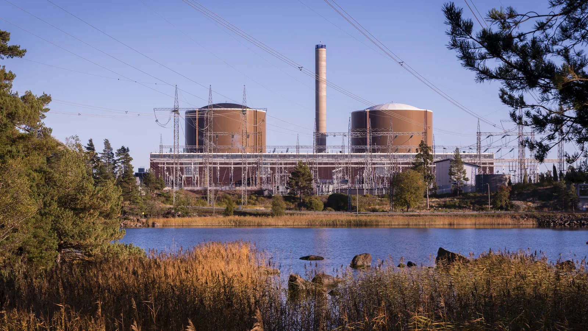
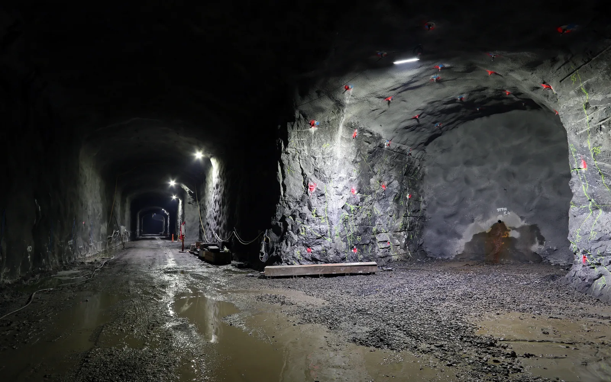

Fissio, fuusio ja ydinvoima
Miksi gramma uraani-235:tä vapauttaa fissiossa eli ytimen jakautumisessa yhtä paljon energiaa kuin noin $3{,}4$ tonnia kivihiiltä palaessaan?
Pohjatiedot
- Ytimen massavaje vastaa sen sidosenergiaa, ja $1\,\text{u}$ vastaa energiaa $931{,}5\,\text{MeV}$luku Massavaje ja ytimen sidosenergia
- Radioaktiivisen aineen aktiivisuus pienenee hajoamislain mukaan puoleen aina yhden puoliintumisajan kuluessaluku Hajoamislaki ja puoliintumisaika
Ydinpolku: tee vaiheet järjestyksessä. Ydinpolulla ei vain lasketa. Siinä myös tutkitaan, selitetään ja piirretään kuvaajia. Valinnainen-tehtävät ovat lisäharjoittelua. Valinnaisia tehtäviä on 4.
Luvun tärkeät käsitteet Vapaaehtoinen
Tutustu luvun tärkeisiin käsitteisiin. Voit kirjoittaa niiden merkitykset sinulle vahvimmalla kielellä tai useammalla kielellä.
- Fissio
- Raskas atomiydin jakautuu kahdeksi keskiraskaaksi ytimeksi. Samalla vapautuu energiaa ja uusia neutroneja.
- Fuusio
- Kaksi kevyttä atomiydintä yhtyy yhdeksi raskaammaksi ytimeksi. Samalla vapautuu energiaa.
- Ketjureaktio
- Fissiossa vapautuneet neutronit aiheuttavat uusia fissioita. Reaktio ylläpitää itse itseään sukupolvi sukupolvelta.
- Ydinreaktori
- Laite, jossa ketjureaktio pidetään hallitusti tasaisena. Hidastin ja säätösauvat säätävät neutronien määrää.
Pohdinta
Olkiluodon kolmas yksikkö tuottaa yksinään sähkötehoa $1600\,\text{MW}$. Sen reaktorin sydämessä on noin $130$ tonnia uraania. Hiilivoimala polttaisi saman sähkön tuottamiseen noin $14\,000$ tonnia hiiltä joka päivä. Ydinvoimalan energia tulee atomiytimistä, jotka jakautuvat kahtia. Jokainen jakautuminen vapauttaa neutroneja, ja ne voivat jakaa uusia ytimiä.
Mistä ytimen jakautumisessa vapautuva energia on peräisin? Miten reaktori estää neutronien ketjua karkaamasta käsistä?
Valinnainen Kertaa: massavaje
Ennusta
Tee ennusteet ennen tutkimista 2 kysymystä
Ennuste 1: tasainen teho
Ennuste 2: pieni ylitys
Tutki
Simulaatio
Käyttöohje
Käynnistä ajaa ketjua sukupolvi kerrallaan, ja Pysäytä pysäyttää sen. Voit valita sukupolven myös liukusäätimellä Sukupolvi $0$–$30$. Liukusäädin Säätösauvat sisällä $s$ säätää sauvojen syvyyttä $0$–$100\,\%$. Arvonta valitsee yhden kolmesta satunnaisesta sarjasta. Sama sarja antaa aina saman tuloksen. Vasemmalla (kapealla näytöllä ylhäällä) harmaat pisteet ovat sukupolven neutroneja, enintään $160$ kerrallaan. Ajon aikana neutroni joko aiheuttaa fission (oranssi välähdys), katoaa säätösauvaan tai karkaa. Kuvaajassa oranssit pisteet ovat neutronien määrä $N$ kussakin sukupolvessa. Vaalea katkoviiva on mallin ennuste $N_0 k^g$. Nopeus muuttaa vain ajon tahtia.
Mallin oletukset
Malli kuvaa ketjureaktiota sukupolvina. Se ei kuvaa neutronien todellisia ratoja eikä aikaa: todellisessa reaktorissa yksi sukupolvi kestää noin kymmenestuhannesosasekunnin. Jokainen neutroni aiheuttaa fission samalla todennäköisyydellä riippumatta muista neutroneista. Fissio tuottaa $2$ tai $3$ uutta neutronia, keskimäärin $2{,}5$. Säätösauvat pienentävät fission todennäköisyyttä. Mallissa ei ole viivästyneitä neutroneja, lämpötilan vaikutusta eikä polttoaineen kulumista. Lukemat ovat mallin arvoja, eivät mittauksia.
Laskennan selitys
Neutroni aiheuttaa fission todennäköisyydellä $P_\text{f} = (1{,}2 - 0{,}008\,s) : 2{,}5$, kun $s$ on sauvojen syvyys prosentteina. Muuten neutroni katoaa: säätösauvaan todennäköisyydellä $0{,}0032\,s$, muuten se karkaa tai absorboituu muualle. Fissio tuottaa $2$ tai $3$ neutronia yhtä todennäköisesti, joten kasvukerroin on $k = 2{,}5\,P_\text{f} = 1{,}2 - 0{,}008\,s$. Seuraavan sukupolven neutronit ovat fissioissa syntyneet neutronit. Lukema $N_g : N_{g-1}$ on sarjan toteutunut kasvu edelliseen sukupolveen verrattuna. Lukema $N_0 k^g$ on mallin keskimääräinen ennuste.
Reaktorin sydämessä on alussa $1000$ neutronia. Säädä säätösauvojen syvyyttä ja seuraa, miten neutronien määrä muuttuu sukupolvesta toiseen.
Koe 1: säätösauvat ja kasvukerroin
Testaa ennuste 1. Valitse sukupolvi $g = 20$ ja arvonnaksi sarja 1. Muuta vain säätösauvojen syvyyttä. Kirjaa kasvukerroin $k$ ja neutronien määrä $N$ ainakin silloin, kun sauvat ovat sisällä $0\,\%$, $25\,\%$ ja $50\,\%$.
Alkutila: säätösauvat sisällä $s$ = $0\,\%$, sukupolvi $g$ = $20$, arvonta: sarja 1. Vakiona: sukupolvi $g$, arvonta. Muutetaan: säätösauvat sisällä $s$.
| säätösauvat sisällä $s$ | $k$ | $N$ |
|---|
Lisää tutkittavaa 2 tehtävää
Koe 2: kasvu sukupolvi sukupolvelta
Testaa ennuste 2. Säätösauvat ovat sisällä $20\,\%$, jolloin $k = 1{,}04$, ja arvonta on sarja 1. Muuta vain sukupolvea. Kirjaa neutronien määrä $N$ ainakin sukupolvissa $0$, $10$, $20$ ja $30$.
Alkutila: säätösauvat sisällä $s$ = $20\,\%$, sukupolvi $g$ = $0$, arvonta: sarja 1. Vakiona: säätösauvat sisällä $s$, arvonta. Muutetaan: sukupolvi $g$.
| sukupolvi $g$ | $N$ | N₀kᵍ |
|---|
Johtopäätös: hallittu ketjureaktio
Kirjoita taulukoidesi perusteella vastaus näihin kysymyksiin.
Millä kasvukertoimen arvolla neutronien määrä pysyi suunnilleen vakiona? Mitä tapahtui pienemmillä ja suuremmilla arvoilla? Miten neutronien määrä kasvoi, kun $k = 1{,}04$? Miksi reaktorin kasvukerroin on pidettävä hyvin tarkasti arvossa $1$?
Mallivastaus
Kokeessa 1 sukupolvessa $20$ neutroneja oli mallin arvoina $39\,387$, kun sauvat olivat ulkona ($k = 1{,}20$). Kun sauvat olivat $25\,\%$ sisällä ($k = 1{,}00$), neutroneja oli $934$. Kun sauvat olivat $50\,\%$ sisällä ($k = 0{,}80$), neutroneja oli vain $7$. Kun jokainen neutroni tuottaa keskimäärin tasan yhden uuden fission neutronin, ketju pysyy tasaisena. Satunnaisuuden vuoksi määrä vaihtelee hieman. Kokeessa 2, kun $k = 1{,}04$, neutroneja oli $1000$, $1437$, $1987$ ja $3264$ sukupolvissa $0$, $10$, $20$ ja $30$. Määrä kerrottiin joka sukupolvessa luvulla $1{,}04$, joten kasvu kiihtyi. Todellisessa reaktorissa sukupolvi kestää vain noin kymmenestuhannesosasekunnin. Siksi pienikin ylitys kasvattaisi tehoa nopeasti. Kasvukerroin pidetään säätösauvoilla tarkasti arvossa $1$, ja viivästyneet neutronit antavat säädölle aikaa.
Arvioi oma vastauksesi
Merkitse kohdat, jotka sinun vastauksessasi jo on.
Kertaa asia teoriasta ja harjoittele tehtävillä.
Teoria
Ydinajatus
Raskaat ytimet jakautuvat, kevyet yhtyvät
Luvussa Massavaje ja ytimen sidosenergia ytimen sidosenergia laskettiin massavajeesta. Kun sidosenergia jaetaan nukleonien määrällä, saadaan sidosenergia nukleonia kohti $\tfrac{E_\text{B}}{A}$. Nukleoni on protoni tai neutroni. Sidosenergia nukleonia kohti kertoo, kuinka tiukasti ytimen protonit ja neutronit ovat keskimäärin sitoutuneet toisiinsa. Kuvaajan huippu on raudan ja nikkelin kohdalla, noin $8{,}8\,\text{MeV}$. Energiaa vapautuu aina, kun ydinreaktion tuotteiden nukleonit ovat tiukemmin sidottuja kuin lähtöaineiden. Siksi raskas ydin voi vapauttaa energiaa jakautumalla kahdeksi keskiraskaaksi ytimeksi. Myös kevyet ytimet voivat vapauttaa energiaa yhtymällä raskaammaksi ytimeksi. Molemmissa reaktioissa siirrytään kuvaajalla ylöspäin, ja se näkyy massan pienenemisenä.
Fissio
Fissiossa eli ytimen jakautumisessa raskas ydin jakautuu kahdeksi keskiraskaaksi ytimeksi. Uraani-235-ydin jakautuu helposti, kun se kaappaa hitaan neutronin. Syntyvä uraani-236-ydin värähtelee niin voimakkaasti, että se venyy ja kuroutuu kahtia. Tyypillinen reaktio on $$ {}^{1}_{0}\text{n} + {}^{235}_{92}\text{U} \rightarrow {}^{141}_{56}\text{Ba} + {}^{92}_{36}\text{Kr} + 3\,{}^{1}_{0}\text{n} $$ Jakautumistapoja on satoja, mutta tuotteina on aina kaksi keskiraskasta ydintä eli fissiotuotetta ja yleensä kaksi tai kolme uutta neutronia. Massaluku ja varaus säilyvät eli pysyvät samoina: $236 = 141 + 92 + 3$ ja $92 = 56 + 36$. Fissiotuotteet lentävät erilleen suurella liike-energialla. Ne jarruuntuvat ympäröivässä aineessa, ja aine lämpenee. Fissiotuotteissa on liikaa neutroneja, joten ne ovat radioaktiivisia ja hajoavat beetahajoamisella.
Ketjureaktio
Fissiossa vapautuvat neutronit voivat aiheuttaa uusia fissioita. Syntyy ketjureaktio, joka etenee sukupolvi kerrallaan. Kaikki neutronit eivät kuitenkaan aiheuta fissiota: osa karkaa polttoaineesta ja osa absorboituu eli sitoutuu muihin ytimiin. Ketjun etenemistä kuvaa kasvukerroin $k$. Se kertoo, kuinka monta seuraavan sukupolven neutronia yksi neutroni keskimäärin tuottaa. Jos sukupolvessa $0$ on $N_0$ neutronia, sukupolvessa $g$ niitä on keskimäärin $$ N_g = N_0 k^g $$ missä $N_g$ on neutronien määrä sukupolvessa $g$ ja $k$ on kasvukerroin. Kun $k < 1$, ketju sammuu. Kun $k = 1$, ketju on kriittinen ja fissioita tapahtuu tasaisesti. Kun $k > 1$, fissioiden määrä kasvaa eksponentiaalisesti eli yhä nopeammin.
Ydinreaktori
Ydinreaktori on laite, jossa ketjureaktio pidetään hallitusti kriittisenä, $k = 1$. Polttoaineena on uraanidioksidia, jossa uraani-235:n osuutta on kasvatettu eli rikastettu luonnon $0{,}7\,\%$:sta noin $3$–$5\,\%$:iin. Fissiossa syntyvät neutronit ovat nopeita, mutta uraani-235 jakautuu paljon todennäköisemmin hitaan neutronin osuessa. Siksi reaktorissa on hidastinta, kevytvesireaktorissa tavallista vettä: neutronit menettävät energiaansa törmäillessään vesimolekyylien vetyytimiin. Sama vesi toimii jäähdytteenä, joka kuljettaa lämmön pois. Säätösauvat sisältävät ainetta, kuten booria, joka absorboi neutroneja. Kun sauvoja työnnetään syvemmälle, kasvukerroin pienenee.
Reaktoria pystytään säätämään, koska pieni osa neutroneista vapautuu vasta sekuntien kuluttua. Uraani-235:llä tämä osuus on noin $0{,}65\,\%$. Nämä viivästyneet neutronit vapautuvat fissiotuotteiden hajoamisesta. Ne hidastavat ketjun muutoksia niin paljon, että säätösauvat ehtivät reagoida. Ydinvoimalassa reaktorin lämpö tuottaa höyryä, joka pyörittää turbiinia ja generaattoria kuten muissakin lämpövoimaloissa.
Fuusio
Fuusiossa eli ytimien yhtymisessä kaksi kevyttä ydintä yhtyy raskaammaksi ytimeksi. Lupaavin reaktio voimalaitoksille on deuteriumin ja tritiumin fuusio. Deuterium ja tritium ovat vedyn raskaita muotoja. Reaktio on $$ {}^{2}_{1}\text{H} + {}^{3}_{1}\text{H} \rightarrow {}^{4}_{2}\text{He} + {}^{1}_{0}\text{n} $$ Ytimet ovat positiivisesti varattuja ja hylkivät toisiaan. Ne pääsevät vahvan vuorovaikutuksen ulottuville vain törmätessään hyvin suurella nopeudella. Siksi polttoaine on kuumennettava plasmaksi, jonka lämpötila on noin $1{,}5 \cdot 10^{8}\,\text{K}$. Plasma on kuuma kaasu, jossa atomit ovat hajonneet ioneiksi ja elektroneiksi. Auringon ytimessä vety fuusioituu heliumiksi noin $1{,}5 \cdot 10^{7}\,\text{K}$:n lämpötilassa. Siellä valtava tiheys ja tunneloituminen (luku Laser ja kvanttirakenteet) auttavat ytimiä yhtymään.
Fuusiovoimalaa ei vielä ole. Ranskaan rakennettavan kansainvälisen ITER-koereaktorin tavoitteena on tuottaa fuusiotehoa $500\,\text{MW}$. Se on kymmenkertainen teho plasman lämmitykseen käytettyyn tehoon $50\,\text{MW}$ verrattuna. Luku $500\,\text{MW}$ on fuusioreaktioissa vapautuva teho. Se ei ole sähköteho. ITER on koelaite, joka ei tuota sähköä verkkoon. Koko laitos kuluttaa sähköä enemmän kuin plasman lämmitykseen kuluu. ITERin vuonna 2024 päivitetyn aikataulun mukaan deuterium–tritium-kokeet alkavat vuonna 2039. Fuusiotutkimuksesta kerrotaan enemmän englanninkielisessä opintojaksossa FY14 Road to Fusion.
Reaktioenergia
Energia massojen erotuksesta
Ydinreaktiossa vapautuva energia saadaan massan ja energian ekvivalenssista. Reaktion lähtöaineiden kokonaismassa on suurempi kuin tuotteiden. Erotusta vastaava energia vapautuu tuotteiden liike-energiana ja gammasäteilynä. Reaktioenergia on $$ Q = (m_\text{alku} - m_\text{loppu})\,c^2 $$ missä $m_\text{alku}$ on lähtöaineiden ja $m_\text{loppu}$ tuotteiden yhteenlaskettu massa ja $c$ on valon nopeus. Kun $Q > 0$, energiaa vapautuu. Massat lasketaan annetuista atomimassoista atomimassayksikköinä (taulukko luvussa Massavaje ja ytimen sidosenergia). Atomimassoissa ovat mukana myös elektronit. Kun järjestyslukujen summa säilyy, elektronien massat kumoutuvat erotuksessa.
Atomimassayksiköstä megaelektronivoltteihin
Luvussa Massavaje ja ytimen sidosenergia todettiin, että atomimassayksikköä vastaava energia on $931{,}5\,\text{MeV}$, eli $1\,\text{u} = 931{,}5\,\tfrac{\text{MeV}}{c^2}$. Kun massaero sijoitetaan tähän yksikköön, tekijä $c^2$ supistuu. Esimerkiksi massaerolla $0{,}1\,\text{u}$ saadaan $Q = 0{,}1 \cdot 931{,}5\,\tfrac{\text{MeV}}{c^2} \cdot c^2 = 93{,}15\,\text{MeV}$.
Kuvassa ovat uraani-235:n fission massat ennen reaktiota ja sen jälkeen. Massa pienenee vain noin $0{,}08\,\%$, mutta se vastaa noin $173\,\text{MeV}$:n energiaa. Kun mukaan lasketaan fissiotuotteiden myöhemmät hajoamiset, yhdestä fissiosta vapautuu keskimäärin noin $200\,\text{MeV}$.
Fissio ja fuusio rinnakkain
Deuteriumin ja tritiumin fuusiossa massa pienenee $0{,}01888\,\text{u}$, joten $Q = 17{,}6\,\text{MeV}$. Yksi fuusio vapauttaa siis vähemmän energiaa kuin yksi fissio. Nukleonia kohti fuusio vapauttaa kuitenkin enemmän: fuusiossa noin $3{,}5\,\text{MeV}$ ja fissiossa noin $0{,}85\,\text{MeV}$. Saman polttoainemassan fuusio vapauttaa siten noin nelinkertaisesti energiaa fissioon verrattuna.
Alun kysymykseen voi nyt vastata. Grammassa uraani-235:tä on $2{,}56 \cdot 10^{21}$ ydintä. Jos kaikki fissioituvat ja kustakin vapautuu $200\,\text{MeV}$, energiaa vapautuu $8{,}2 \cdot 10^{10}\,\text{J}$ eli noin $82\,\text{GJ}$. Kivihiilen lämpöarvo on noin $24\,\tfrac{\text{MJ}}{\text{kg}}$. Lämpöarvo kertoo, kuinka paljon energiaa vapautuu, kun kilogramma ainetta palaa. Sama energia saadaan siis polttamalla noin $3{,}4$ tonnia hiiltä. Palaminen on kemiallinen reaktio, jossa muuttuvat elektronien sidokset. Niiden energiat ovat elektronivoltin luokkaa. Ydinreaktiossa energiat ovat miljoonia elektronivoltteja.
Ydinvoima Suomessa

Voimalaitokset
Suomessa on kaksi ydinvoimalaitosta ja viisi reaktoria. Ydinvoima tuotti vuonna 2024 noin $39\,\%$ Suomen sähköstä (Tilastokeskus: Sähkön ja lämmön tuotanto 2024).
| Yksikkö | Tyyppi | Sähköteho | Käytössä |
|---|---|---|---|
| Loviisa 1 | painevesi | $507\,\text{MW}$ | 1977 |
| Loviisa 2 | painevesi | $507\,\text{MW}$ | 1981 |
| Olkiluoto 1 | kiehutusvesi | $890\,\text{MW}$ | 1979 |
| Olkiluoto 2 | kiehutusvesi | $890\,\text{MW}$ | 1982 |
| Olkiluoto 3 | painevesi | $1600\,\text{MW}$ | 2023 |
Tyyppi kertoo, onko reaktori painevesi- vai kiehutusvesireaktori. Painevesireaktorissa vesi pysyy nesteenä suuren paineen vuoksi. Kiehutusvesireaktorissa vesi kiehuu höyryksi reaktorissa. Sähköteho on nettoteho eli teho, joka siirtyy sähköverkkoon. Käytössä-sarake kertoo vuoden, jolloin kaupallinen käyttö alkoi. Lähde: IAEA PRIS -tietokanta (2025), Fortum (2023) ja Teollisuuden Voima (2023). Loviisan voimalaitosta käyttää Fortum ja Olkiluotoa Teollisuuden Voima. Valtioneuvosto myönsi vuonna 2023 Loviisan yksiköille käyttöluvan vuoden 2050 loppuun. Vuonna 2018 se myönsi Olkiluodon kahdelle ensimmäiselle yksikölle käyttöluvan vuoteen 2038.
Käytetty polttoaine ja Onkalo
Reaktorista poistettu polttoaine sisältää radioaktiivisia fissiotuotteita. Siinä on myös raskaampia aineita, kuten plutoniumia, jota syntyy, kun uraani kaappaa neutroneja. Aluksi polttoaineen aktiivisuus ja jälkilämpö ovat niin suuria, että sitä jäähdytetään vuosikymmeniä vesialtaissa. Ensimmäisten vuosisatojen aikana aktiivisuutta hallitsevat cesium-137 ja strontium-90, joiden puoliintumisajat ovat noin $30\,\text{a}$. Plutonium-239:n puoliintumisaika on kuitenkin $24\,100\,\text{a}$. Siksi käytetty polttoaine on eristettävä elollisesta luonnosta satojatuhansia vuosia.
Posiva rakentaa Olkiluotoon Onkaloa, maailman ensimmäistä käytetyn ydinpolttoaineen loppusijoituslaitosta. Loppusijoitus tarkoittaa, että polttoaine jätetään pysyvästi suojaan kallioon. Polttoaine suljetaan kuparikapseleihin, jotka sijoitetaan noin $430\,\text{m}$:n syvyyteen peruskallioon. Kapselit ympäröidään vettä imevällä bentoniittisavella. Kupari kestää syöpymistä hapettomassa pohjavedessä, ja savi hidastaa veden liikkeitä kapselin ympärillä. Posiva haki käyttölupaa vuonna 2021. Säteilyturvakeskus STUK antoi hakemuksesta puoltavan lausunnon elokuussa 2026, ja valtioneuvosto myönsi käyttöluvan 22. lokakuuta 2026 vuoden 2070 loppuun. Käyttölupa ei vielä tarkoita, että loppusijoitus olisi alkanut. Varsinainen loppusijoitus voi alkaa vasta, kun STUK on tarkastanut laitoksen ja todennut sen käyttövalmiiksi.

Turvallisuus ja jälkilämpö
Kevytvesireaktori ei voi räjähtää kuin ydinase, koska sen polttoaineessa on uraani-235:tä vain muutama prosentti. Ydinaseissa käytetään noin $90\,\%$:iin rikastettua uraania. Lisäksi kun vesi kiehuu tai kuumenee, se hidastaa neutroneja huonommin, ja ketjureaktio heikkenee itsestään. Reaktorin pysäyttäminen ei kuitenkaan pysäytä lämmöntuotantoa. Fissiotuotteiden hajoaminen tuottaa jälkilämpöä: heti sammutuksen jälkeen noin $6\,\%$ ja tunnin kuluttua noin $1$–$2\,\%$ aiemmasta lämpötehosta. Siksi reaktoria on jäähdytettävä vielä pitkään sammutuksen jälkeen. Fukushiman onnettomuudessa vuonna 2011 hyökyaalto katkaisi jäähdytyksen, ja jälkilämpö sulatti polttoainetta kolmessa reaktorissa.
Ydinvoimakeskustelu fysiikan näkökulmasta
Fysiikka ei ratkaise, kuinka paljon ydinvoimaa yhteiskunnan pitäisi käyttää. Se auttaa kuitenkin erottamaan paikkansapitävät väitteet virheellisistä. Ydinvoiman elinkaaren aikaiset kasvihuonepäästöt ovat noin $12\,\tfrac{\text{g}}{\text{kWh}}$ hiilidioksidiekvivalenttia. Se tarkoittaa, että muidenkin kasvihuonekaasujen vaikutus on muutettu hiilidioksidimääräksi. Päästöt ovat samaa luokkaa kuin tuulivoimalla ja noin $1{,}5\,\%$ kivihiilen päästöistä (IPCC 2014). Polttoainetta tarvitaan vähän, ja voimala tuottaa tasaisesti säästä riippumatta.
Toisaalta käytetty polttoaine on vaarallista hyvin pitkään. Vakavat onnettomuudet kuten Tšernobyl 1986 ja Fukushima 2011 ovat harvinaisia mutta vaikutuksiltaan laajoja. Lisäksi voimaloiden rakentaminen on kallista ja hidasta: Olkiluoto 3:n rakentaminen alkoi vuonna 2005 ja säännöllinen sähköntuotanto vuonna 2023. Riskien ja hyötyjen punninta on arvovalinta, jossa fysiikan tieto on lähtökohta.
Yleinen virhekäsitys
Moni ajattelee, että fissiossa tai fuusiossa jokin osa ytimestä "muuttuu energiaksi", esimerkiksi että osa nukleoneista häviää. Nukleonien määrä kuitenkin säilyy: fissiossa ennen reaktiota on $236$ nukleonia ja sen jälkeen samoin $236$. Massa pienenee siksi, että tuotteiden nukleonit ovat tiukemmin sidottuja, ja suurempi sidosenergia tarkoittaa pienempää kokonaismassaa. Vapautunut energia on tuotteiden liike-energiaa ja säteilyä.
Toinen virhe on luulla, että ydinvoimala voisi räjähtää kuin ydinpommi. Reaktorin polttoaineessa uraani-235:tä on liian vähän ydinräjähdykseen. Vakavassa onnettomuudessa vaarana on polttoaineen ylikuumeneminen ja radioaktiivisten aineiden vapautuminen, ei ydinräjähdys.
Tiivistelmä
- Fissiossa raskas ydin jakautuu kahdeksi keskiraskaaksi ytimeksi, ja fuusiossa kevyet ytimet yhtyvät. Kummassakin tuotteiden sidosenergia nukleonia kohti on suurempi, joten massa pienenee ja energiaa vapautuu.
- Reaktioenergia on $Q = (m_\text{alku} - m_\text{loppu})\,c^2$, ja atomimassoilla $1\,\text{u} = 931{,}5\,\tfrac{\text{MeV}}{c^2}$. Uraani-235:n fissio vapauttaa noin $200\,\text{MeV}$, deuteriumin ja tritiumin fuusio $17{,}6\,\text{MeV}$.
- Ketjureaktiossa neutronien määrä on $N_g = N_0 k^g$. Reaktori pidetään kriittisenä, $k = 1$, hidastimen ja säätösauvojen avulla.
- Suomen viisi reaktoria Loviisassa ja Olkiluodossa tuottivat vuonna 2024 noin $39\,\%$ sähköstä. Käytetty polttoaine on tarkoitus loppusijoittaa Onkaloon noin $430\,\text{m}$:n syvyyteen.
Valinnainen Palaa ennusteisiisi
Vertaa ennusteitasi kokeiden mallin arvoihin. Palaa sitten alun kysymykseen. Mistä uraaniytimen jakautumisessa vapautuva energia on peräisin? Miksi yksi gramma uraania vastaa tonneja hiiltä?
Haluaisitko muuttaa ennustettasi?
Esimerkit
Kun olet lukenut teorian, tee ohjatut esimerkit. Ensin katsot mallilaskun vaihe vaiheelta. Sitten teet valinnat itse. Vihjeet auttavat, jos jäät jumiin.
Esimerkki 1: Uraani-235:n fissio
Uraani-235-ydin kaappaa hitaan neutronin ja jakautuu reaktiossa ${}^{1}_{0}\text{n} + {}^{235}_{92}\text{U} \rightarrow {}^{141}_{56}\text{Ba} + {}^{92}_{36}\text{Kr} + 3\,{}^{1}_{0}\text{n}$. Atomimassat ovat: uraani-235 $235{,}0439282\,\text{u}$, barium-141 $140{,}9144033\,\text{u}$, krypton-92 $91{,}9261731\,\text{u}$ ja neutroni $1{,}0086649\,\text{u}$. Kuinka paljon energiaa reaktiossa vapautuu?
Vaihe 1/7
Tunnetut ja kysytty. Atomimassat $m_\text{U} = 235{,}0439282\,\text{u}$, $m_\text{Ba} = 140{,}9144033\,\text{u}$, $m_\text{Kr} = 91{,}9261731\,\text{u}$ ja $m_\text{n} = 1{,}0086649\,\text{u}$. Kysytty on reaktioenergia $Q$ megaelektronivoltteina.
Vaihe 2/7
Periaate. Reaktion tuotteiden massa on pienempi kuin lähtöaineiden, ja massojen erotusta vastaava energia vapautuu. Järjestyslukujen summa säilyy ($92 = 56 + 36$), joten atomimassojen elektronit kumoutuvat ja atomimassoja voi käyttää suoraan. Lähtöaineissa on yksi neutroni ja tuotteissa kolme.
Vaihe 3/7
Kaava ratkaistuna. Reaktioenergia saadaan suoraan massojen erotuksesta:
$$\begin{aligned} &Q = (m_\text{alku} - m_\text{loppu})\,c^2 \\ &m_\text{alku} = m_\text{n} + m_\text{U} \\ &m_\text{loppu} = m_\text{Ba} + m_\text{Kr} + 3m_\text{n} \end{aligned}$$
Vaihe 4/7
Yksikkömuunnokset. Massat ovat atomimassayksikköinä, ja $1\,\text{u} = 931{,}5\,\tfrac{\text{MeV}}{c^2}$. Kun massaero kerrotaan tällä, $c^2$ supistuu ja energia saadaan suoraan megaelektronivoltteina.
Vaihe 5/7
Sijoitus. Lähtöaineiden massa on
ja tuotteiden
$$\begin{aligned} Q &= (m_\text{alku} - m_\text{loppu})\,c^2 \\ &= (236{,}0525931\,\text{u} \\ &\quad - 235{,}8665711\,\text{u})\,c^2 \\ &= 0{,}1860220\,\text{u} \cdot c^2 \\ &= 0{,}1860220 \cdot 931{,}5\,\tfrac{\text{MeV}}{c^2} \cdot c^2 \\ &= 173{,}28\,\text{MeV} \end{aligned}$$
Vaihe 6/7
Tulos. Reaktiossa vapautuu noin $173\,\text{MeV}$. Kolme merkitsevää numeroa riittää: atomimassat ovat hyvin tarkkoja, mutta jakautumistapoja on monta, eikä yksittäisen reaktion energiaa tarvita tarkemmin.
Vaihe 7/7
Järkevyys. Pyöreillä luvuilla massaero on noin $0{,}19\,\text{u}$, ja $0{,}19 \cdot 900\,\text{MeV} \approx 171\,\text{MeV}$. Tulos on myös lähellä sidosenergiakuvaajasta saatavaa arviota: $236$ nukleonin sidosenergia nousee noin $0{,}9\,\text{MeV}$ nukleonia kohti, eli noin $210\,\text{MeV}$.
Valinnainen Esimerkki 2: Etsi virhe
Esimerkki 3: Ydinvoimakeskustelu fysiikan silmin
Arvioi kolmea keskustelussa kuultua väitettä fysiikan näkökulmasta. Kerro, mikä niissä pitää paikkansa ja mikä ei. Perustele vastauksesi luvun tiedoilla.
- ”Ydinvoimala voi räjähtää kuin atomipommi.”
- ”Ydinsähkö on päästötöntä, joten sillä ei ole haittoja.”
- ”Käytetty polttoaine on vaarallista vain muutaman vuosikymmenen, koska sen aktiivisuus pienenee nopeasti.”
Mallivastaus
-
Ei pidä paikkaansa. Kevytvesireaktorin polttoaineessa uraani-235:tä on noin $3$–$5\,\%$. Ydinaseissa käytetään uraania, joka on rikastettu noin $90\,\%$:iin. Lisäksi kun vesi kuumenee tai kiehuu, se hidastaa neutroneja huonommin ja ketjureaktio heikkenee. Vakavan onnettomuuden vaara on jälkilämmön aiheuttama polttoaineen sulaminen ja radioaktiivisten aineiden vapautuminen, kuten Fukushimassa 2011.
-
Osittain totta. Elinkaaren kasvihuonepäästöt ovat noin $12\,\tfrac{\text{g}}{\text{kWh}}$ hiilidioksidiekvivalenttia, samaa luokkaa kuin tuulivoimalla. Haittoja silti on: pitkäikäinen käytetty polttoaine, pieni mutta vaikutuksiltaan laaja onnettomuusriski, uraanin louhinnan ympäristövaikutukset sekä kallis ja hidas rakentaminen.
-
Ei pidä paikkaansa. Cesium-137:n ja strontium-90:n puoliintumisaika on noin $30\,\text{a}$, joten niiden aktiivisuus pienenee tuhannesosaan noin $300$ vuodessa. Plutonium-239:n puoliintumisaika on kuitenkin $24\,100\,\text{a}$. Siksi polttoaine on eristettävä satojatuhansia vuosia, ja se loppusijoitetaan kuparikapseleissa syvälle kallioon Onkaloon.
Arvioi oma vastauksesi
Merkitse kohdat, jotka sinun vastauksessasi jo on.
Kertaa asia teoriasta ja harjoittele tehtävillä.
Esimerkki 4: Sovella: ITERin fuusioteho
ITER-koereaktorin tavoitteena on tuottaa deuteriumin ja tritiumin fuusiossa tehoa $500\,\text{MW}$. Jokaisessa fuusiossa ${}^{2}_{1}\text{H} + {}^{3}_{1}\text{H} \rightarrow {}^{4}_{2}\text{He} + {}^{1}_{0}\text{n}$ vapautuu energiaa $17{,}6\,\text{MeV}$. Kuinka monta fuusioreaktiota plasmassa on tapahduttava sekunnissa? Anna vastaus yksikössä $10^{20}\,\tfrac{1}{\text{s}}$.
Vihje 1: ohjaava kysymys
Teho kertoo, kuinka monta joulea energiaa vapautuu sekunnissa. Kuinka monta joulea vapautuu yhdessä reaktiossa?
Vihje 2: mikä yhteys
Muunna reaktioenergia jouleiksi sijoittamalla $1\,\text{MeV} = 10^{6} \cdot 1{,}602 \cdot 10^{-19}\,\text{J}$.
Vihje 3: välivaihe
Yhdessä reaktiossa vapautuu $2{,}82 \cdot 10^{-12}\,\text{J}$. Jaa teho $500 \cdot 10^{6}\,\text{W}$ tällä luvulla.
Näytä ratkaisu
Annettu
fuusioteho $P = 500\,\text{MW}$, yhden reaktion energia $Q = 17{,}6\,\text{MeV}$
Kysytty
reaktioiden määrä sekunnissa $\tfrac{N}{t}$ yksikössä $10^{20}\,\tfrac{1}{\text{s}}$
Periaate
Teho on vapautuva energia aikayksikössä. Jokainen reaktio vapauttaa saman energian $Q$. Siksi ajassa $t$ vapautuu energia $E = NQ$, ja teho on $P = \tfrac{NQ}{t}$.
Kaava
$P = \dfrac{NQ}{t}$, josta $\dfrac{N}{t} = \dfrac{P}{Q}$
Muunnokset
Sijoitus
Vastaus
$1{,}77 \cdot 10^{20}\,\tfrac{1}{\text{s}}$
Vastauksessa on kolme merkitsevää numeroa, kuten reaktioenergiassa $17{,}6\,\text{MeV}$.
Järkevyys
Pyöreillä luvuilla
Määrä on valtava, mutta polttoainetta kuluu vähän: $1{,}77 \cdot 10^{20}$ deuterium- ja tritiumparin massa on vain noin $1{,}5\,\text{mg}$.
Tehtävät
Taso 1 · perusharjoitus 8 tehtävää
Yksi kaava tai yksi päättelyaskel. Tee ensin ydintehtävät. Loput ovat lisäharjoitusta.
- Tehtävä 11-1
Fuusioreaktorissa tritiumia voidaan tuottaa litiumista. Reaktio on ${}^{6}_{3}\text{Li} + {}^{1}_{0}\text{n} \rightarrow {}^{4}_{2}\text{He} + {}^{3}_{1}\text{H}$. Atomimassat ovat: litium-6 $6{,}0151229\,\text{u}$, neutroni $1{,}0086649\,\text{u}$, helium-4 $4{,}0026033\,\text{u}$ ja tritium $3{,}0160493\,\text{u}$. Kuinka paljon energiaa reaktiossa vapautuu? Anna vastaus megaelektronivoltteina.
Vastaus
$4{,}78\,\text{MeV}$
Näytä ratkaisu
Annettu
atomimassat $m_\text{Li} = 6{,}0151229\,\text{u}$, $m_\text{n} = 1{,}0086649\,\text{u}$, $m_\text{He} = 4{,}0026033\,\text{u}$ ja $m_\text{T} = 3{,}0160493\,\text{u}$
Kysytty
reaktioenergia $Q$ megaelektronivoltteina
Periaate
Reaktiossa vapautuu energiaa, joka vastaa lähtöaineiden ja tuotteiden massojen erotusta. Järjestyslukujen summa säilyy ($3 + 0 = 2 + 1$). Siksi atomimassojen elektronit kumoutuvat, ja atomimassoja voi käyttää suoraan.
Kaava
$Q = (m_\text{alku} - m_\text{loppu})\,c^2$, josta $Q = (m_\text{Li} + m_\text{n} - m_\text{He} - m_\text{T})\,c^2$
Muunnokset
$1\,\text{u} = 931{,}5\,\tfrac{\text{MeV}}{c^2}$. Massaero atomimassayksikköinä kerrotaan luvulla $931{,}5\,\tfrac{\text{MeV}}{c^2}$, ja $c^2$ supistuu.
Sijoitus
$Q$$= (7{,}0237878\,\text{u} - 7{,}0186526\,\text{u})\,c^2$$= 0{,}0051352\,\text{u} \cdot c^2$$= 0{,}0051352 \cdot 931{,}5\,\tfrac{\text{MeV}}{c^2} \cdot c^2$$= 4{,}7834\,\text{MeV}$Vastaus
$4{,}78\,\text{MeV}$
Vastauksessa on kolme merkitsevää numeroa. Massaeron $0{,}0051352\,\text{u}$ tarkkuus riittäisi myös useampaan numeroon.
Järkevyys
Massaero on noin $0{,}005\,\text{u}$, ja $0{,}005 \cdot 900\,\text{MeV} = 4{,}5\,\text{MeV}$. Tulos on pienempi kuin deuteriumin ja tritiumin fuusiossa ($17{,}6\,\text{MeV}$), mutta se on selvästi positiivinen. Reaktio vapauttaa siis energiaa.
- Tehtävä 11-2
Erään uraani-235:n fissioreaktion tuotteiden yhteenlaskettu massa on $0{,}1915\,\text{u}$ pienempi kuin lähtöaineiden massa. Kuinka paljon energiaa reaktiossa vapautuu? Anna vastaus megaelektronivoltteina.
Vastaus
$178\,\text{MeV}$
Näytä ratkaisu
Annettu
massan pieneneminen $\Delta m = 0{,}1915\,\text{u}$
Kysytty
vapautuva energia $Q$ megaelektronivoltteina
Periaate
Massan ja energian ekvivalenssi: kun reaktion tuotteiden massa on pienempi kuin lähtöaineiden, massojen erotusta vastaava energia vapautuu. Se vapautuu tuotteiden liike-energiana ja säteilynä.
Kaava
$Q = (m_\text{alku} - m_\text{loppu})\,c^2$, josta $Q = \Delta m\,c^2$
Muunnokset
$1\,\text{u} = 931{,}5\,\tfrac{\text{MeV}}{c^2}$. Kun massaero sijoitetaan tässä yksikössä, $c^2$ supistuu.
Sijoitus
$Q$$= 0{,}1915\,\text{u} \cdot c^2$$= 0{,}1915 \cdot 931{,}5\,\tfrac{\text{MeV}}{c^2} \cdot c^2$$= 178{,}38\,\text{MeV}$Vastaus
$178\,\text{MeV}$
Vastauksessa on kolme merkitsevää numeroa. Massaero $0{,}1915\,\text{u}$ on annettu neljällä numerolla, mutta yksittäisen fissioenergian tarkempaa arvoa ei tarvita.
Järkevyys
Pyöreillä luvuilla $0{,}2 \cdot 900\,\text{MeV} = 180\,\text{MeV}$. Tulos on lähellä luvun esimerkin fissioenergiaa $173\,\text{MeV}$ ja keskimääräistä fissioenergiaa, joka on noin $200\,\text{MeV}$.
- Tehtävä 11-3
Ketjureaktion sukupolvessa $0$ on $1000$ neutronia, ja kasvukerroin on $k = 0{,}90$. Kuinka monta neutronia ketjussa on keskimäärin sukupolvessa $10$?
Vastaus
$349$
Näytä ratkaisu
Annettu
neutronien määrä alussa $N_0 = 1000$, kasvukerroin $k = 0{,}90$, sukupolvi $g = 10$
Kysytty
neutronien keskimääräinen määrä $N_{10}$ sukupolvessa $10$
Periaate
Jokainen neutroni tuottaa seuraavaan sukupolveen keskimäärin $k$ neutronia. Siksi määrä kerrotaan jokaisessa sukupolvessa luvulla $k$. Koska $k < 1$, ketju sammuu vähitellen.
Kaava
$N_g = N_0 k^g$
Muunnokset
Ei tarvita: neutronien määrä ja kasvukerroin ovat pelkkiä lukuja.
Sijoitus
$N_{10}$$= 1000 \cdot 0{,}90^{10}$$= 1000 \cdot 0{,}34868$$= 348{,}68$Vastaus
$349$
Neutronia. Määrä on keskiarvo, koska yksittäisen neutronin kohtalo on satunnainen.
Järkevyys
Joka sukupolvessa katoaa $10\,\%$ neutroneista. Jos vähennys olisi aina $100$ neutronia, määrä olisi nolla. Nämä $10\,\%$ lasketaan kuitenkin yhä pienemmästä määrästä, joten jäljellä on vielä noin kolmannes.
- Tehtävä 11-4Ydintehtävä
Kahden deuteriumytimen fuusiossa syntyy helium-3-ydin ja neutroni: ${}^{2}_{1}\text{H} + {}^{2}_{1}\text{H} \rightarrow {}^{3}_{2}\text{He} + {}^{1}_{0}\text{n}$. Atomimassat ovat: deuterium $2{,}0141018\,\text{u}$, helium-3 $3{,}0160293\,\text{u}$ ja neutroni $1{,}0086649\,\text{u}$. Kuinka paljon energiaa reaktiossa vapautuu? Anna vastaus megaelektronivoltteina.
Vastaus
$3{,}27\,\text{MeV}$
Näytä ratkaisu
Annettu
atomimassat $m_\text{D} = 2{,}0141018\,\text{u}$, $m_\text{He} = 3{,}0160293\,\text{u}$ ja $m_\text{n} = 1{,}0086649\,\text{u}$
Kysytty
reaktioenergia $Q$ megaelektronivoltteina
Periaate
Reaktiossa vapautuu massojen erotusta vastaava energia. Järjestyslukujen summa säilyy ($1 + 1 = 2 + 0$), joten atomimassojen elektronit kumoutuvat. Lähtöaineina on kaksi deuteriumatomia.
Kaava
$Q = (m_\text{alku} - m_\text{loppu})\,c^2$, josta $Q = (2m_\text{D} - m_\text{He} - m_\text{n})\,c^2$
Muunnokset
$1\,\text{u} = 931{,}5\,\tfrac{\text{MeV}}{c^2}$. Tekijä $c^2$ supistuu, ja energia saadaan megaelektronivoltteina.
Sijoitus
$Q$$= (4{,}0282036\,\text{u} - 4{,}0246942\,\text{u})\,c^2$$= 0{,}0035094\,\text{u} \cdot c^2$$= 0{,}0035094 \cdot 931{,}5\,\tfrac{\text{MeV}}{c^2} \cdot c^2$$= 3{,}2690\,\text{MeV}$Vastaus
$3{,}27\,\text{MeV}$
Vastauksessa on kolme merkitsevää numeroa. Massaero $0{,}0035094\,\text{u}$ on laskettu riittävän tarkasti.
Järkevyys
Massaero on noin $0{,}0035\,\text{u}$, ja $0{,}0035 \cdot 1000\,\text{MeV} = 3{,}5\,\text{MeV}$. Tulos on noin viidesosa deuteriumin ja tritiumin fuusion energiasta. Tämä on yksi syy siihen, että voimaloihin suunnitellaan juuri tritiumia.
- Tehtävä 11-5
Neutronin massa on $1{,}0086649\,\text{u}$. Kuinka suurta energiaa neutronin massa vastaa? Anna vastaus megaelektronivoltteina.
Vastaus
$939{,}6\,\text{MeV}$
Näytä ratkaisu
Annettu
neutronin massa $m_\text{n} = 1{,}0086649\,\text{u}$
Kysytty
massaa vastaava energia $E$ megaelektronivoltteina
Periaate
Massan ja energian ekvivalenssin mukaan jokaista massaa vastaa energia $E = mc^2$. Tämä pätee myös levossa olevaan hiukkaseen.
Kaava
$E = m_\text{n} c^2$
Muunnokset
$1\,\text{u} = 931{,}5\,\tfrac{\text{MeV}}{c^2}$. Massa kerrotaan luvulla $931{,}5\,\tfrac{\text{MeV}}{c^2}$, ja $c^2$ supistuu.
Sijoitus
$E$$= 1{,}0086649\,\text{u} \cdot c^2$$= 1{,}0086649 \cdot 931{,}5\,\tfrac{\text{MeV}}{c^2} \cdot c^2$$= 939{,}57\,\text{MeV}$Vastaus
$939{,}6\,\text{MeV}$
Vastauksessa on neljä merkitsevää numeroa, kuten muuntokertoimessa $931{,}5\,\tfrac{\text{MeV}}{c^2}$.
Järkevyys
Neutronin massa on hieman yli $1\,\text{u}$, joten energian on oltava hieman yli $931{,}5\,\text{MeV}$. Se on noin viisi kertaa yhden fission energia. Fission noin $200\,\text{MeV}$ vastaa siis vain noin $0{,}2\,\text{u}$:n massan pienenemistä. Se on alle $0{,}1\,\%$ uraaniatomin massasta.
- Tehtävä 11-6Ydintehtävä
Ydinreaktorissa polttoainesauvojen välissä on hidastinta, esimerkiksi vettä. Mikä on hidastimen tehtävä?
Vastaus
Se hidastaa nopeat neutronit, koska hitaat neutronit aiheuttavat uraani-235:n fissioita todennäköisemmin kuin nopeat.
Näytä ratkaisu
Kysytty
mikä on ydinreaktorin hidastimen tehtävä.
Periaate
Fissiossa syntyvät neutronit ovat hyvin nopeita. Uraani-235-ydin kaappaa kuitenkin hitaan neutronin todennäköisemmin kuin nopean. Hidastin on aine, jonka kevyisiin ytimiin neutronit törmäävät ja menettävät liike-energiaa. Hidastin ei poista neutroneja eikä siirrä lämpöä. Neutronien poistaminen on säätösauvojen tehtävä ja lämmön siirtäminen jäähdytteen tehtävä.
Mallivastaus
Hidastin hidastaa fissioissa syntyneet nopeat neutronit, koska hitaat neutronit aiheuttavat uraani-235:n fissioita todennäköisemmin kuin nopeat. Näin ketjureaktio pysyy käynnissä. Neutronien määrää ja kasvukerrointa säädetään säätösauvoilla, jotka sitovat neutroneja. Lämmön siirtää turbiinille jäähdyte. Neutroni ei jakaudu osiin hidastuessaan. Se menettää liike-energiaa törmäyksissä.
- Tehtävä 11-7
Auringon ytimessä vety fuusioituu heliumiksi noin $15 \cdot 10^{6}\,\text{K}$:n lämpötilassa. Miksi fuusio vaatii näin korkean lämpötilan?
Vastaus
Ytimet hylkivät toisiaan sähköisesti, joten ne tarvitsevat suuren liike-energian päästäkseen toisiaan lähelle.
Näytä ratkaisu
Kysytty
miksi fuusio vaatii korkean lämpötilan.
Periaate
Atomiytimillä on positiivinen varaus, joten ne hylkivät toisiaan sähköisesti. Ydinvoimat vaikuttavat vain hyvin lyhyellä matkalla, joten ytimien täytyy päästä niin lähelle toisiaan. Korkeassa lämpötilassa hiukkasten liike-energia on suuri. Silloin osa ytimistä pääsee hylkimisestä huolimatta riittävän lähelle.
Mallivastaus
Ytimet hylkivät toisiaan sähköisesti, joten ne tarvitsevat suuren liike-energian päästäkseen toisiaan lähelle. Kun ytimet ovat tarpeeksi lähellä, lyhyen kantaman ydinvoimat voittavat sähköisen hylkimisen ja ytimet yhtyvät. Lämpötila ei tee ytimistä radioaktiivisia eikä pienennä niiden massaa. Näin kuumana aine ei ole nestettä vaan plasmaa. Massan pieneneminen tapahtuu vasta fuusioreaktiossa, ja siinä vapautuu energiaa.
- Tehtävä 11-8
Yhdessä uraani-235:n fissiossa vapautuu keskimäärin $200\,\text{MeV}$ energiaa. Kuinka paljon tämä on jouleina? Käytä muuntokerrointa $1\,\text{eV} = 1{,}602 \cdot 10^{-19}\,\text{J}$. Anna vastaus yksikössä $10^{-11}\,\text{J}$.
Vastaus
$3{,}20 \cdot 10^{-11}\,\text{J}$
Näytä ratkaisu
Annettu
yhden fission energia $Q = 200\,\text{MeV}$, $1\,\text{eV} = 1{,}602 \cdot 10^{-19}\,\text{J}$
Kysytty
energia $Q$ jouleina yksikössä $10^{-11}\,\text{J}$
Periaate
Megaelektronivoltti on miljoona elektronivolttia. Annetun muuntokertoimen mukaan elektronivoltti on tietty energia jouleina. Energia pysyy samana, vain yksikkö vaihtuu.
Kaava
$Q = n \cdot 1\,\text{eV}$, missä $n = 200 \cdot 10^{6}$ on energia elektronivoltteina ja $1\,\text{eV} = 1{,}602 \cdot 10^{-19}\,\text{J}$
Muunnokset
$1\,\text{MeV} = 10^{6}\,\text{eV}$, joten $200\,\text{MeV} = 200 \cdot 10^{6}\,\text{eV}$.
Sijoitus
$Q$$= 200 \cdot 10^{6} \cdot 1\,\text{eV}$$= 200 \cdot 10^{6} \cdot 1{,}602 \cdot 10^{-19}\,\text{J}$$= 3{,}204 \cdot 10^{-11}\,\text{J}$Vastaus
$3{,}20 \cdot 10^{-11}\,\text{J}$
Eli $3{,}20$ yksikössä $10^{-11}\,\text{J}$. Vastauksessa on kolme merkitsevää numeroa, kuten muuntokertoimessa.
Järkevyys
Gramma uraani-235:tä sisältää $2{,}56 \cdot 10^{21}$ ydintä. Jos se fissioituisi kokonaan, se vapauttaisi
$2{,}56 \cdot 10^{21} \cdot 3{,}2 \cdot 10^{-11}\,\text{J}$$\approx 8{,}2 \cdot 10^{10}\,\text{J}$Tämä on luvun $82\,\text{GJ}$ suuruinen, joten yhden fission energia on oikeaa suuruusluokkaa.
Taso 2 · soveltava harjoitus 8 tehtävää
Kaksi vaihetta, mittausaineiston käsittely, yksikkömuunnos tai kaavan ratkaiseminen. Tee ensin ydintehtävät. Loput ovat lisäharjoitusta.
- Tehtävä 11-9
Olkiluoto 3:n reaktorin lämpöteho on $4300\,\text{MW}$. Reaktori vapauttaa energiaa, ja siksi sen polttoaineen massa pienenee.
Kuinka paljon massa pienenee vuodessa ($365\,\text{d}$)? Oleta, että reaktori toimii koko vuoden täydellä teholla. Anna vastaus kilogrammoina.
Vastaus
$1{,}5\,\text{kg}$
Näytä ratkaisu
Annettu
lämpöteho $P = 4300\,\text{MW}$, aika $t = 365\,\text{d}$, valon nopeus $c = 2{,}998 \cdot 10^{8}\,\tfrac{\text{m}}{\text{s}}$
Kysytty
polttoaineen massan pieneneminen $\Delta m$ kilogrammoina
Periaate
Reaktorin vapauttama energia on peräisin ydinreaktioiden massan pienenemisestä. Massa pienenee energiaa $E$ vastaavan määrän $\Delta m = \tfrac{E}{c^2}$. Täydellä teholla energia on teho kertaa aika.
Kaava
$E = Pt$ ja $E = \Delta m\,c^2$, joten $\Delta m\,c^2 = Pt$ ja $\Delta m = \dfrac{Pt}{c^2}$
Muunnokset
$P$$= 4300\,\text{MW}$$= 4300 \cdot 10^{6}\,\text{W}$$t$$= 365 \cdot 24 \cdot 3600\,\text{s}$$= 31\,536\,000\,\text{s}$Sijoitus
$\Delta m$$= \dfrac{4300 \cdot 10^{6}\,\text{W} \cdot 31\,536\,000\,\text{s}}{(2{,}998 \cdot 10^{8}\,\tfrac{\text{m}}{\text{s}})^2}$$= \dfrac{1{,}3560 \cdot 10^{17}\,\text{J}}{8{,}9880 \cdot 10^{16}\,\tfrac{\text{m}^2}{\text{s}^2}}$$= 1{,}5087\,\text{kg}$Vastaus
$1{,}5\,\text{kg}$
Vastauksessa on kaksi merkitsevää numeroa, kuten tehossa $4300\,\text{MW}$.
Järkevyys
Arviolla
$4 \cdot 10^{9}\,\text{W} \cdot 3 \cdot 10^{7}\,\text{s} : 9 \cdot 10^{16}\,\tfrac{\text{m}^2}{\text{s}^2}$$\approx 1{,}3\,\text{kg}$Reaktorissa on yli sata tonnia uraania, joten massan muutos on pieni. Silti se vastaa valtavaa energiaa. Yksikkö: $\tfrac{\text{J}}{\text{m}^2/\text{s}^2} = \text{kg}$.
- Tehtävä 11-10
Deuteriumin ja tritiumin fuusiossa ${}^{2}_{1}\text{H} + {}^{3}_{1}\text{H} \rightarrow {}^{4}_{2}\text{He} + {}^{1}_{0}\text{n}$ atomimassat ovat: deuterium $2{,}0141018\,\text{u}$, tritium $3{,}0160493\,\text{u}$, helium-4 $4{,}0026033\,\text{u}$ ja neutroni $1{,}0086649\,\text{u}$.
Kuinka paljon energiaa vapautuu, kun yksi kilogramma deuterium–tritium-seosta fuusioituu? Käytä $1\,\text{u} = 1{,}66054 \cdot 10^{-27}\,\text{kg}$. Anna vastaus yksikössä $10^{14}\,\tfrac{\text{J}}{\text{kg}}$.
Vastaus
$3{,}37 \cdot 10^{14}\,\tfrac{\text{J}}{\text{kg}}$
Näytä ratkaisu
Annettu
atomimassat $m_\text{D} = 2{,}0141018\,\text{u}$, $m_\text{T} = 3{,}0160493\,\text{u}$, $m_\text{He} = 4{,}0026033\,\text{u}$ ja $m_\text{n} = 1{,}0086649\,\text{u}$; $1\,\text{u} = 1{,}66054 \cdot 10^{-27}\,\text{kg}$
Kysytty
vapautuva energia polttoainekilogrammaa kohti $\tfrac{E}{m}$ yksikössä $10^{14}\,\tfrac{\text{J}}{\text{kg}}$
Periaate
Yksi reaktio vapauttaa massaeroa vastaavan energian $Q$ ja kuluttaa yhden deuteriumatomin ja yhden tritiumatomin. Energia massayksikköä kohti on yhden reaktion energia jaettuna yhden reaktion polttoaineen massalla.
Kaava
$Q$$= (m_\text{D} + m_\text{T} - m_\text{He} - m_\text{n})\,c^2$$\dfrac{E}{m}$$= \dfrac{Q}{m_\text{D} + m_\text{T}}$Muunnokset
$1\,\text{u} = 931{,}5\,\tfrac{\text{MeV}}{c^2}$; $1\,\text{MeV} = 10^{6} \cdot 1{,}602 \cdot 10^{-19}\,\text{J}$; polttoaineen massa
$5{,}0301511\,\text{u}$$= 5{,}0301511 \cdot 1{,}66054 \cdot 10^{-27}\,\text{kg}$$= 8{,}3528 \cdot 10^{-27}\,\text{kg}$Sijoitus
$Q$$= 0{,}0188829 \cdot 931{,}5\,\text{MeV}$$= 17{,}589\,\text{MeV}$$= 17{,}589 \cdot 10^{6} \cdot 1{,}602 \cdot 10^{-19}\,\text{J}$$= 2{,}8178 \cdot 10^{-12}\,\text{J}$joten
$\dfrac{E}{m}$$= \dfrac{2{,}8178 \cdot 10^{-12}\,\text{J}}{8{,}3528 \cdot 10^{-27}\,\text{kg}}$$= 3{,}3735 \cdot 10^{14}\,\tfrac{\text{J}}{\text{kg}}$Vastaus
$3{,}37 \cdot 10^{14}\,\tfrac{\text{J}}{\text{kg}}$
Vastauksessa on kolme merkitsevää numeroa. Atomimassat ovat hyvin tarkkoja, ja muuntokerroin $1{,}602 \cdot 10^{-19}\,\text{J}$ rajoittaa tarkkuuden neljään numeroon.
Järkevyys
Kivihiilen lämpöarvo on noin $2{,}4 \cdot 10^{7}\,\tfrac{\text{J}}{\text{kg}}$. Fuusiopolttoaine vapauttaa siis noin $10^{7}$-kertaisesti energiaa kilogrammaa kohti. Luvun mukaan fuusio tuottaa noin nelinkertaisesti energiaa fissioon verrattuna. Uraani-235:n fissio vapauttaa $8{,}2 \cdot 10^{13}\,\tfrac{\text{J}}{\text{kg}}$, ja kun se kerrotaan neljällä, saadaan noin $3 \cdot 10^{14}\,\tfrac{\text{J}}{\text{kg}}$.
- Tehtävä 11-11
Uraani-235 voi jakautua myös reaktiossa ${}^{1}_{0}\text{n} + {}^{235}_{92}\text{U} \rightarrow {}^{140}_{54}\text{Xe} + {}^{94}_{38}\text{Sr} + x\,{}^{1}_{0}\text{n}$. Atomimassat ovat: uraani-235 $235{,}0439282\,\text{u}$, ksenon-140 $139{,}9216458\,\text{u}$, strontium-94 $93{,}9153556\,\text{u}$ ja neutroni $1{,}0086649\,\text{u}$. Päättele ensin neutronien määrä $x$. Laske sitten, kuinka paljon energiaa reaktiossa vapautuu. Anna vastaus megaelektronivoltteina.
Vastaus
$185\,\text{MeV}$
Näytä ratkaisu
Annettu
reaktio ${}^{1}_{0}\text{n} + {}^{235}_{92}\text{U} \rightarrow {}^{140}_{54}\text{Xe} + {}^{94}_{38}\text{Sr} + x\,{}^{1}_{0}\text{n}$; atomimassat $m_\text{U} = 235{,}0439282\,\text{u}$, $m_\text{Xe} = 139{,}9216458\,\text{u}$, $m_\text{Sr} = 93{,}9153556\,\text{u}$ ja $m_\text{n} = 1{,}0086649\,\text{u}$
Kysytty
neutronien määrä $x$ ja reaktioenergia $Q$ megaelektronivoltteina
Periaate
Ydinreaktiossa massaluku säilyy, joten neutronien määrä saadaan massalukujen summista. Järjestysluvut täsmäävät jo ($92 = 54 + 38$), joten atomimassojen elektronit kumoutuvat. Energia vastaa massojen erotusta.
Kaava
$1 + 235 = 140 + 94 + x$, josta $x = 236 - 234 = 2$;
$Q$$= (m_\text{n} + m_\text{U} - m_\text{Xe} - m_\text{Sr} - 2m_\text{n})\,c^2$Muunnokset
$1\,\text{u} = 931{,}5\,\tfrac{\text{MeV}}{c^2}$, ja $c^2$ supistuu.
Sijoitus
$Q$$= (236{,}0525931\,\text{u} - 235{,}8543312\,\text{u})\,c^2$$= 0{,}1982619\,\text{u} \cdot c^2$$= 0{,}1982619 \cdot 931{,}5\,\tfrac{\text{MeV}}{c^2} \cdot c^2$$= 184{,}68\,\text{MeV}$Vastaus
$185\,\text{MeV}$
Vastauksessa on kolme merkitsevää numeroa, kuten luvun esimerkissä. Reaktiossa vapautuu kaksi neutronia.
Järkevyys
Tulos on lähellä esimerkin reaktion energiaa ($173\,\text{MeV}$). Eri jakautumistavoissa vapautuu hieman eri energiat. Kun fissiotuotteiden hajoamiset lasketaan mukaan, keskimääräinen energia on noin $200\,\text{MeV}$ fissiota kohti.
- Tehtävä 11-12
Koejärjestelyssä ketjun neutronimäärä kasvaa $40$ sukupolvessa luvusta $1000$ lukuun $5000$. Kasvukerroin $k$ pysyy koko ajan samana. Kuinka monta prosenttia neutronien määrä kasvaa sukupolvesta seuraavaan?
Vastaus
$4{,}1\,\%$
Näytä ratkaisu
Annettu
neutronien määrä alussa $N_0 = 1000$, sukupolvessa $40$ määrä $N_{40} = 5000$
Kysytty
neutronimäärän kasvu sukupolvesta seuraavaan prosentteina, eli $(k - 1) \cdot 100\,\%$
Periaate
Kun kasvukerroin pysyy samana, neutronien määrä kerrotaan jokaisessa sukupolvessa luvulla $k$. Siksi $40$ sukupolven jälkeen alkuperäinen määrä on kerrottu luvulla $k^{40}$.
Kaava
$N_g = N_0 k^g$, josta
$k^{g}$$= \dfrac{N_g}{N_0}$$k$$= \left(\dfrac{N_g}{N_0}\right)^{1/g}$Muunnokset
Ei tarvita: neutronien määrät ovat pelkkiä lukuja. Lopuksi kasvu prosentteina on $(k - 1) \cdot 100\,\%$.
Sijoitus
$k$$= \left(\dfrac{5000}{1000}\right)^{1/40}$$= 5^{0{,}025}$$= 1{,}04106$joten kasvu on $(1{,}04106 - 1) \cdot 100\,\% = 4{,}106\,\%$
Vastaus
noin $4{,}1\,\%$ sukupolvessa. Vastauksessa on kaksi merkitsevää numeroa.
Järkevyys
Tarkistus: $1{,}041^{40} \approx 4{,}99$, eli määrä viisinkertaistuu. Jos kasvu olisi tasaisesti $100$ neutronia sukupolvessa, $40$ sukupolvessa tulisi $4000$ lisää. Se on $10\,\%$ alkumäärästä sukupolvea kohti. Kasvu kertautuu, joten tarvittava prosentti on pienempi.
- Tehtävä 11-13Ydintehtävä
Reaktorin käynnistyskokeessa mitattiin neutronien määrä ketjussa viidessä peräkkäisessä sukupolvessa (taulukko, esimerkkiaineisto). Oleta, että kasvukerroin $k$ pysyy koko ajan samana.
a) Määritä kasvukerroin $k$ taulukon ensimmäisen ja viimeisen arvon avulla. Onko reaktori alikriittinen, kriittinen vai ylikriittinen?
b) Kuinka monta neutronia ketjussa olisi sukupolvessa $50$, jos kasvukerroin pysyisi samana?
Vastauslaatikkoon tulee kohdan b) tulos.
Neutronien määrä ketjussa, esimerkkiaineisto Sukupolvi $g$ Neutroneja $N_g$ 0 1000 1 1013 2 1022 3 1038 4 1049 5 1064 Vastaus
$N_{50} \approx 1860$
Näytä ratkaisu
Annettu
neutronimäärät $N_0 = 1000$ ja $N_5 = 1064$ sukupolvissa $0$ ja $5$, kasvukerroin $k$ vakio, kysytty sukupolvi $g = 50$
Kysytty
a) kasvukerroin $k$ ja reaktorin kriittisyys, b) neutronien määrä $N_{50}$
Periaate
Kun kasvukerroin pysyy samana, neutronien määrä kerrotaan jokaisessa sukupolvessa luvulla $k$. Jos $k < 1$, reaktori on alikriittinen ja ketju sammuu. Jos $k = 1$, reaktori on kriittinen ja määrä pysyy samana. Jos $k > 1$, reaktori on ylikriittinen ja määrä kasvaa. Taulukon peräkkäisten arvojen suhteet vaihtelevat hieman ($1{,}009$–$1{,}016$), koska neutronien kohtalo on satunnainen. Siksi $k$ määritetään koko jaksolta ensimmäisen ja viimeisen arvon avulla.
Kaava
$N_g = N_0 k^g$, josta
$k$$= \left(\dfrac{N_5}{N_0}\right)^{1/5}$$N_{50} = N_0 k^{50}$
Muunnokset
Ei tarvita: neutronimäärät ovat paljaita lukuja.
Sijoitus
a)
$k$$= \left(\dfrac{1064}{1000}\right)^{1/5}$$= 1{,}01248$Koska $k > 1$, reaktori on ylikriittinen. b) $k^{50} = (k^{5})^{10} = 1{,}064^{10}$, joten
$N_{50}$$= 1000 \cdot 1{,}064^{10}$$= 1000 \cdot 1{,}8596$$= 1859{,}6$Vastaus
Neutroneja on $N_{50} \approx 1860$ kohdan b) mukaan. Kasvukerroin on $k = 1{,}012$ ja reaktori on ylikriittinen. Kolme merkitsevää numeroa riittää, koska taulukon arvot vaihtelevat satunnaisesti.
Järkevyys
Neutronimäärä kasvaa noin $1{,}2\,\%$ sukupolvessa. Se sopii taulukon kasvuun ($6{,}4\,\%$ viidessä sukupolvessa). Kaksinkertaistumiseen tarvittaisiin yli $55$ sukupolvea, koska $1{,}0125^{55} \approx 1{,}98$. Siksi $50$ sukupolvessa määrä on hieman alle kaksinkertainen: $1860 < 2000$. Käytössä olevassa reaktorissa säätösauvat pitävät kasvukertoimen luvussa $k = 1$.
- Tehtävä 11-14
Taulukossa ovat Suomen ydinvoimalareaktoreiden nettosähkötehot pyöristettyinä (TVO:n ja Fortumin verkkosivut, tilanne 2024).
a) Laske reaktoreiden yhteenlaskettu nettosähköteho.
b) Reaktorit tuottavat vuodessa ($365\,\text{d}$) energiaa $90\,\%$ siitä, mitä ne tuottaisivat käydessään koko vuoden nimellisteholla (kapasiteettikerroin $0{,}90$, oletus). Kuinka paljon sähköenergiaa se on? Anna vastaus terawattitunteina.
Vastauslaatikkoon tulee kohdan b) tulos.
Suomen ydinvoimalareaktorit, nettosähköteho (MW) (TVO:n ja Fortumin verkkosivut, tilanne 2024) Voimala Reaktori $P\,(\text{MW})$ Olkiluoto OL1 890 Olkiluoto OL2 890 Olkiluoto OL3 1600 Loviisa LO1 507 Loviisa LO2 507 Vastaus
$34{,}6\,\text{TWh}$
Näytä ratkaisu
Annettu
reaktoreiden nettosähkötehot taulukosta ($890\,\text{MW}$, $890\,\text{MW}$, $1600\,\text{MW}$, $507\,\text{MW}$ ja $507\,\text{MW}$), kapasiteettikerroin $0{,}90$, aika $365\,\text{d}$
Kysytty
a) yhteenlaskettu teho $P$, b) vuotuinen sähköenergia $E$ terawattitunteina
Periaate
Yhteenlaskettu teho on reaktoreiden tehojen summa. Energia on teho kertaa aika. Kapasiteettikertoimen $0{,}90$ mukaan reaktorit tuottavat vuodessa $90\,\%$ siitä energiasta, jonka ne tuottaisivat koko vuoden nimellisteholla.
Kaava
$P = P_1 + P_2 + P_3 + P_4 + P_5$ ja $E = 0{,}90\,P\,t$
Muunnokset
$t$$= 365 \cdot 24\,\text{h}$$= 8760\,\text{h}$$P$$= 4394\,\text{MW}$$= 4394 \cdot 10^{6}\,\text{W}$$1\,\text{TWh} = 10^{12}\,\text{Wh}$
Sijoitus
a) Summa on $890 + 890 + 1600 + 507 + 507 = 4394$, joten $P = 4394\,\text{MW}$. b)
$E$$= 0{,}90 \cdot 4394 \cdot 10^{6}\,\text{W} \cdot 8760\,\text{h}$$= 3{,}464 \cdot 10^{13}\,\text{Wh}$$= 34{,}64\,\text{TWh}$Vastaus
$34{,}6\,\text{TWh}$
Vastauksessa on kolme merkitsevää numeroa. Taulukon tehot on pyöristetty ja kapasiteettikerroin on oletus, joten tulos on arvio.
Järkevyys
Koko vuoden nimellisteholla energia olisi $4394\,\text{MW} \cdot 8760\,\text{h} \approx 38{,}5\,\text{TWh}$. Siitä $90\,\%$ on noin $34{,}6\,\text{TWh}$. Pyöreillä luvuilla $4{,}4\,\text{GW} \cdot 0{,}9 \cdot 8800\,\text{h} \approx 35\,\text{TWh}$.
- Tehtävä 11-15Ydintehtävä
Oppilas kirjoittaa: ”Uraani-235-ydin kaappaa neutronin ja jakautuu. Ennen reaktiota nukleoneja on $236$ ja reaktion jälkeen $236$, joten tuotteiden massa on sama kuin lähtöaineiden massa. Siksi fissiossa ei vapaudu energiaa.” Fissio kuitenkin vapauttaa energiaa.
Mikä oppilaan päättelyssä on virhe?
Vastaus
Nukleonien määrä säilyy, mutta tuotteiden nukleonit ovat tiukemmin sidottuja, joten massa pienenee ja massaero vapautuu energiana.
Näytä ratkaisu
Kysytty
mikä oppilaan päättelyssä on virhe, kun hän päättelee, ettei fissiossa vapaudu energiaa.
Periaate
Nukleonien lukumäärä säilyy ($236 = 236$), joten oppilaan lähtökohta on oikea. Massa ei kuitenkaan ole pelkästään nukleonien lukumäärä kertaa vakio. Siihen vaikuttaa myös sidosenergia. Tuotteissa sidosenergia nukleonia kohti on suurempi kuin uraanissa, joten tuotteiden kokonaismassa on pienempi. Massan ja energian ekvivalenssin mukaan massaero vapautuu energiana, $Q = \Delta m\,c^2$.
Mallivastaus
Nukleonien määrä säilyy, mutta tuotteiden nukleonit ovat tiukemmin sidottuja kuin uraani-235:n nukleonit. Siksi tuotteiden kokonaismassa on pienempi kuin lähtöaineiden. Massaero vapautuu energiana, joten fissiossa vapautuu energiaa. Nukleonit eivät muutu energiaksi eivätkä katoa. Massa ja energia ovat ekvivalentteja, eivät toisistaan erillisiä. Jos tuotteiden nukleonit olisivat löyhemmin sidottuja, massa kasvaisi eikä energiaa vapautuisi.
- Tehtävä 11-16
Ajatellaan reaktiota, jossa hiili-12-ydin jakautuu kolmeksi helium-4-ytimeksi: ${}^{12}_{6}\text{C} \rightarrow 3\,{}^{4}_{2}\text{He}$. Hiili-12:n sidosenergia nukleonia kohti on $7{,}680\,\text{MeV}$. Helium-4:n sidosenergia nukleonia kohti on $7{,}074\,\text{MeV}$.
Vapautuuko tässä jakautumisessa energiaa?
Vastaus
Reaktio vaatii energiaa.
Näytä ratkaisu
Kysytty
vapautuuko energiaa, kun hiili-12-ydin jakautuu kolmeksi helium-4-ytimeksi, ja mikä perustelu sen selittää.
Periaate
Ydinreaktiossa energiaa vapautuu, kun tuotteiden sidosenergia on yhteensä suurempi kuin lähtöaineiden. Energiaa kuluu, kun se on pienempi. Nukleonien määrä säilyy, joten ratkaisee sidosenergia nukleonia kohti $\tfrac{E_\text{B}}{A}$. Fissio vapauttaa energiaa yleensä raskailla ytimillä. Niillä jakautuminen siirtää nukleoneja kohti kuvaajan huippua. Tässä ratkaisevat annetut arvot $\tfrac{E_\text{B}}{A}$.
Mallivastaus
Reaktio vaatii energiaa. Lasketaan sidosenergiat ennen reaktiota ja sen jälkeen. Kummallakin puolella on $12$ nukleonia.
$E_\text{B,alku} = 12 \cdot 7{,}680\,\text{MeV}$
$E_\text{B,alku} = 92{,}16\,\text{MeV}$
$E_\text{B,loppu} = 12 \cdot 7{,}074\,\text{MeV}$
$E_\text{B,loppu} = 84{,}888\,\text{MeV}$
$Q = E_\text{B,loppu} - E_\text{B,alku}$
$Q = 84{,}888\,\text{MeV} - 92{,}16\,\text{MeV}$
$Q \approx -7{,}27\,\text{MeV}$
Tuotteissa nukleonit ovat löyhemmin sidottuja, joten sidosenergia pienenee noin $7{,}3\,\text{MeV}$. Tämä energia on tuotava reaktioon, esimerkiksi gammafotonina. Tuotteiden yhteismassa on suurempi kuin hiili-12-atomin massa. Hiili-12 on kevyt ydin sidosenergiakuvaajan huipun vasemmalla puolella. Siksi sen jakautuminen siirtää nukleoneja alaspäin kuvaajalla. Käänteinen reaktio, kolmen helium-4-ytimen fuusio, vapauttaa saman energian.
Perustelu, että sidosenergia vapautuu ytimen jakautuessa, on virheellinen: sidosenergiaa tarvitaan ytimen hajottamiseen. Perustelu, että jakautuminen vaatii aina energiaa, on virheellinen, koska uraani-235:n fissio vapauttaa energiaa. Nukleonien määrä on molemmin puolin $12$, mutta se ei selitä energiaa, koska energia tulee sidosenergian muutoksesta.
Taso 3 · haastava 5 tehtävää
Valinnaisia tehtäviä. Sovellat, yhdistät kaksi ideaa tai päättelet uudessa tilanteessa.
- Tehtävä 11-17
Olkiluoto 3:n reaktorin lämpöteho on $4300\,\text{MW}$. Kussakin uraani-235:n fissiossa vapautuu keskimäärin $200\,\text{MeV}$. Uraani-235:n atomimassa on $235{,}0439282\,\text{u}$, ja $1\,\text{u} = 1{,}66054 \cdot 10^{-27}\,\text{kg}$. Oleta, että koko lämpöteho syntyy uraani-235:n fissioista.
Kuinka monta kilogrammaa uraani-235:tä fissioituu reaktorissa vuorokaudessa?
Vastaus
$4{,}5\,\text{kg}$
Näytä ratkaisu
Annettu
lämpöteho $P = 4300\,\text{MW}$, yhden fission energia $Q = 200\,\text{MeV}$, aika $t = 1\,\text{d}$, uraani-235:n atomimassa $235{,}0439282\,\text{u}$, $1\,\text{u} = 1{,}66054 \cdot 10^{-27}\,\text{kg}$
Kysytty
vuorokaudessa fissioituvan uraani-235:n massa $m$ kilogrammoina
Periaate
Tehtävän oletuksen mukaan koko lämpöteho syntyy uraani-235:n fissioista. Todellisessa reaktorissa osa tulee plutonium-239:n fissioista. Lämpöteho on fissioissa vapautuva energia aikayksikössä, joten fissioiden määrä on vapautunut energia jaettuna yhden fission energialla. Jokainen fissio kuluttaa yhden uraani-235-atomin, joten massa on fissioiden määrä kertaa atomin massa.
Kaava
$Pt = NQ$, josta
$N$$= \dfrac{Pt}{Q}$$m$$= N m_\text{U}$$= \dfrac{Pt\,m_\text{U}}{Q}$Muunnokset
$P = 4300 \cdot 10^{6}\,\text{W}$;
$t$$= 24 \cdot 3600\,\text{s}$$= 86\,400\,\text{s}$$Q$$= 200 \cdot 10^{6} \cdot 1{,}602 \cdot 10^{-19}\,\text{J}$$= 3{,}204 \cdot 10^{-11}\,\text{J}$$m_\text{U}$$= 235{,}0439282 \cdot 1{,}66054 \cdot 10^{-27}\,\text{kg}$$= 3{,}9030 \cdot 10^{-25}\,\text{kg}$Sijoitus
$N$$= \dfrac{4300 \cdot 10^{6}\,\text{W} \cdot 86\,400\,\text{s}}{3{,}204 \cdot 10^{-11}\,\text{J}}$$= 1{,}1596 \cdot 10^{25}$joten
$m$$= 1{,}1596 \cdot 10^{25} \cdot 3{,}9030 \cdot 10^{-25}\,\text{kg}$$= 4{,}5257\,\text{kg}$Vastaus
$4{,}5\,\text{kg}$
Vastauksessa on kaksi merkitsevää numeroa, kuten tehossa $4300\,\text{MW}$.
Järkevyys
Luvun mukaan yksi gramma uraani-235:tä vapauttaa noin $82\,\text{GJ}$. Vuorokaudessa reaktori tuottaa
$4{,}3 \cdot 10^{9}\,\text{W} \cdot 86\,400\,\text{s}$$\approx 3{,}7 \cdot 10^{14}\,\text{J}$Lisäksi
$3{,}7 \cdot 10^{14}\,\text{J} : 8{,}2 \cdot 10^{10}\,\tfrac{\text{J}}{\text{g}}$$\approx 4500\,\text{g}$Tulos täsmää.
- Tehtävä 11-18
Auringon säteilyteho on $3{,}83 \cdot 10^{26}\,\text{W}$. Energia syntyy Auringon ytimessä fuusiossa. Kokonaisreaktiossa neljästä vetyytimestä syntyy yksi helium-4-ydin.
Vapautuva energia saadaan neljän vetyatomin ja yhden heliumatomin massojen erotuksesta. Vetyatomin massa on $1{,}0078250\,\text{u}$ ja helium-4-atomin massa $4{,}0026033\,\text{u}$.
Kuinka monta heliumydintä Auringossa syntyy sekunnissa? Oleta, että kaikki vapautuva energia päätyy säteilytehoksi. Anna vastaus yksikössä $10^{37}\,\tfrac{1}{\text{s}}$.
Vastaus
$8{,}94 \cdot 10^{37}\,\tfrac{1}{\text{s}}$
Näytä ratkaisu
Annettu
säteilyteho $P = 3{,}83 \cdot 10^{26}\,\text{W}$, vetyatomin massa $m_\text{H} = 1{,}0078250\,\text{u}$, helium-4-atomin massa $m_\text{He} = 4{,}0026033\,\text{u}$
Kysytty
heliumytimien syntymisnopeus $\tfrac{N}{t}$ yksikössä $10^{37}\,\tfrac{1}{\text{s}}$
Periaate
Jokaista syntyvää heliumydintä kohti vapautuu energia $Q$. Se vastaa neljän vetyatomin ja yhden heliumatomin massojen erotusta. Kaikki energia päätyy säteilyksi, joten säteilyteho on $Q$ kertaa heliumytimien syntymisnopeus.
Kaava
$Q = (4m_\text{H} - m_\text{He})\,c^2$ ja $P = \dfrac{N}{t}\,Q$, josta $\dfrac{N}{t} = \dfrac{P}{Q}$
Muunnokset
$1\,\text{u} = 931{,}5\,\tfrac{\text{MeV}}{c^2}$ ja $1\,\text{MeV} = 10^{6} \cdot 1{,}602 \cdot 10^{-19}\,\text{J}$
Sijoitus
$Q$$= (4{,}0313000\,\text{u} - 4{,}0026033\,\text{u})\,c^2$$= 0{,}0286967 \cdot 931{,}5\,\text{MeV}$$= 26{,}731\,\text{MeV}$$= 26{,}731 \cdot 10^{6} \cdot 1{,}602 \cdot 10^{-19}\,\text{J}$$= 4{,}2823 \cdot 10^{-12}\,\text{J}$joten
$\dfrac{N}{t}$$= \dfrac{3{,}83 \cdot 10^{26}\,\tfrac{\text{J}}{\text{s}}}{4{,}2823 \cdot 10^{-12}\,\text{J}}$$= 8{,}9438 \cdot 10^{37}\,\tfrac{1}{\text{s}}$Vastaus
$8{,}94 \cdot 10^{37}\,\tfrac{1}{\text{s}}$
Vastauksessa on kolme merkitsevää numeroa, kuten säteilytehossa $3{,}83 \cdot 10^{26}\,\text{W}$.
Järkevyys
Arviolla
$4 \cdot 10^{26}\,\text{W} : 4 \cdot 10^{-12}\,\text{J}$$= 10^{38}\,\tfrac{1}{\text{s}}$Auringon massa pienenee nopeudella $\tfrac{P}{c^2} \approx 4 \cdot 10^{9}\,\tfrac{\text{kg}}{\text{s}}$. Se on Auringon massaan verrattuna mitätön.
- Tehtävä 11-19
Käytetyssä ydinpolttoaineessa on plutonium-239:ää, jonka puoliintumisaika on $24\,100\,\text{a}$. Kuinka kauan kestää, ennen kuin sen aktiivisuus on pienentynyt tuhannesosaan alkuperäisestä? Anna vastaus yksikössä $10^{5}\,\text{a}$.
Vastaus
$2{,}40 \cdot 10^{5}\,\text{a}$
Näytä ratkaisu
Annettu
plutonium-239:n puoliintumisaika $T_{1/2} = 24\,100\,\text{a}$, aktiivisuus pienenee tuhannesosaan: $\tfrac{A}{A_0} = \tfrac{1}{1000}$
Kysytty
aika $t$ yksikössä $10^{5}\,\text{a}$
Periaate
Aktiivisuus pienenee hajoamislain mukaan puoleen jokaisen puoliintumisajan aikana (luku Hajoamislaki ja puoliintumisaika). Kysytty aika on se määrä puoliintumisaikoja, jolla $\left(\tfrac{1}{2}\right)^{n} = \tfrac{1}{1000}$.
Kaava
$\dfrac{A}{A_0}$$= \left(\dfrac{1}{2}\right)^{t/T_{1/2}}$josta $2^{t/T_{1/2}} = \dfrac{A_0}{A}$ ja $t = T_{1/2} \log_2 \dfrac{A_0}{A}$
Muunnokset
Ei tarvita: aika saadaan vuosina, kuten puoliintumisaika.
Sijoitus
$t$$= 24\,100\,\text{a} \cdot \log_2 1000$$= 24\,100\,\text{a} \cdot 9{,}9658$$= 240\,175\,\text{a}$Vastaus
$2{,}40 \cdot 10^{5}\,\text{a}$
Vastauksessa on kolme merkitsevää numeroa, kuten puoliintumisajassa $24\,100\,\text{a}$.
Järkevyys
$2^{10} = 1024 \approx 1000$, joten aikaa kuluu noin kymmenen puoliintumisaikaa eli noin $241\,000\,\text{a}$. Siksi käytetty polttoaine on eristettävä satojatuhansia vuosia. Cesium-137 ($30{,}1\,\text{a}$) sen sijaan pienenee tuhannesosaan noin $300$ vuodessa.
- Tehtävä 11-20
Reaktorista poistetun käytetyn ydinpolttoaineen aktiivisuus mitattiin jäähdytysaltaassa viiden vuosikymmenen ajan (taulukko, esimerkkiaineisto, aktiivisuus tonnia polttoainetta kohti). Aika $t$ lasketaan noin $10$ vuotta poiston jälkeen, kun lyhytikäiset fissiotuotteet ovat jo hajonneet. Tällöin aktiivisuuden määräävät pääasiassa cesium-137 ja strontium-90.
a) Piirrä aktiivisuuden luonnollinen logaritmi $\ln A$ ajan funktiona. Sovita pisteisiin suora ja määritä sen avulla aktiivisuuden puoliintumisaika.
b) Kuinka monta vuotta kuluu, kunnes fissiotuotteiden aktiivisuus on laskenut arvoon $100\,\tfrac{\text{TBq}}{\text{t}}$ (esimerkkiarvo), jos aktiivisuus noudattaa koko ajan samaa hajoamislakia?
c) Perustele, miksi todellinen aktiivisuus ei noudata tätä lakia enää satojen vuosien kuluttua. Perustele myös, miksi Onkaloon loppusijoitettu polttoaine on eristettävä tuhansia vuosia. Käytä esimerkkinä plutonium-239:ää, jonka puoliintumisaika on $24\,100\,\text{a}$.
Vastauslaatikkoon tulee kohdan b) tulos vuosina.
Käytetyn polttoaineen aktiivisuus, esimerkkiaineisto $t\,(\text{a})$ $A\,(\tfrac{\text{TBq}}{\text{t}})$ 0 30000 10 23900 20 19250 30 15050 40 11950 50 9650 Vastaus
$250\,\text{a}$
Näytä ratkaisu
Annettu
aktiivisuus tonnia kohti ajan funktiona (taulukko, esimerkkiaineisto; $t$ lasketaan noin $10$ vuotta poiston jälkeen), tavoitearvo $A_\text{raja} = 100\,\tfrac{\text{TBq}}{\text{t}}$, plutonium-239:n puoliintumisaika $24\,100\,\text{a}$
Kysytty
a) puoliintumisaika $T_{1/2}$, b) aika $t$, jolloin aktiivisuus on $100\,\tfrac{\text{TBq}}{\text{t}}$, c) perustelu
Periaate
Hajoamislain mukaan $A = A_0 e^{-\lambda t}$, joten $\ln A = \ln A_0 - \lambda t$ on ajan lineaarinen funktio, jonka kulmakerroin on $-\lambda$. Suora sovitetaan pisteisiin, ja puoliintumisaika on $T_{1/2} = \tfrac{\ln 2}{\lambda}$. Kun suoraa jatketaan, aika, jolloin aktiivisuus on $100\,\tfrac{\text{TBq}}{\text{t}}$, saadaan ratkaisemalla hajoamislaista $t$.
Kaava
$\ln A = \ln A_0 - \lambda t$,
$T_{1/2}$$= \dfrac{\ln 2}{\lambda}$$t$$= \dfrac{1}{\lambda}\ln\dfrac{A_0}{A_\text{raja}}$Muunnokset
Ei tarvita: aika on vuosina ja aktiivisuus yksikössä $\tfrac{\text{TBq}}{\text{t}}$ koko tehtävän ajan.
Kuvaajan lukeminen
Pisteet $(t, \ln A)$ ovat $(0\,\text{a}; 10{,}309)$, $(10\,\text{a}; 10{,}082)$, $(20\,\text{a}; 9{,}865)$, $(30\,\text{a}; 9{,}619)$, $(40\,\text{a}; 9{,}388)$ ja $(50\,\text{a}; 9{,}175)$. Ne asettuvat likimain suoralle. Mittauspisteet eivät kuitenkaan yleensä ole täsmälleen samalla suoralla, koska mittauksessa on epävarmuutta. Suora piirretään pisteiden lomaan. Sovitetun suoran yhtälö on $\ln A = 10{,}311 - 0{,}02285\,\tfrac{1}{\text{a}} \cdot t$, joten
$\lambda$$= 0{,}02285\,\tfrac{1}{\text{a}}$$A_0$$= e^{10{,}311}\,\tfrac{\text{TBq}}{\text{t}}$$= 30\,060\,\tfrac{\text{TBq}}{\text{t}}$Kaksi kaukana toisistaan olevaa pistettä, esimerkiksi $(0\,\text{a}; 10{,}309)$ ja $(50\,\text{a}; 9{,}175)$, antaa suunnilleen saman suoran.
Sijoitus
a)
$T_{1/2}$$= \dfrac{\ln 2}{0{,}02285\,\tfrac{1}{\text{a}}}$$= 30{,}3\,\text{a}$b)
$t$$= \dfrac{1}{0{,}02285\,\tfrac{1}{\text{a}}}\ln\dfrac{30\,060}{100}$$= 43{,}77\,\text{a} \cdot 5{,}706$$= 249{,}7\,\text{a}$c) Plutonium-239:n aktiivisuus pienenee puoleen vasta $24\,100$ vuodessa. Siksi $250$ vuodessa se on pienentynyt vain noin $1\,\%$: $\left(\tfrac{1}{2}\right)^{250/24100} = 0{,}993$.
Vastaus
$250\,\text{a}$
Kohdan b) tuloksena (ekstrapolointi eli suoran jatkaminen ulottuu $50$ vuodesta $250$ vuoteen). Puoliintumisaika on $30\,\text{a}$. Kaksi merkitsevää numeroa riittää, koska suoran sovitus on epätarkka. Kohdan c) perustelu: noin $250$ vuoden jälkeen aktiivisuuden määräävät pitkäikäiset nuklidit, kuten plutonium-239. Sen aktiivisuus pienenee vain hitaasti. Plutonium-239:n oma aktiivisuus pienenee tuhannesosaan vasta noin $240\,000$ vuodessa (tehtävä L3-03). Siksi polttoaine eristetään Onkaloon pitkäksi aikaa.
Järkevyys
Taulukossa aktiivisuus on $30$ vuodessa $15\,050$ eli noin puolet alkuarvosta $30\,000$, joten puoliintumisaika on noin $30\,\text{a}$. Kahdeksan puoliintumisaikaa pienentää aktiivisuuden tekijällä $2^{8} = 256$, ja $30\,000 : 256 \approx 117$. Siksi $100\,\tfrac{\text{TBq}}{\text{t}}$ saavutetaan noin $250\,\text{a}$ kuluttua. Malli kuvaa vain fissiotuotteita.
- Tehtävä 11-21
Loviisan voimalan yhden reaktorin nettosähköteho on $507\,\text{MW}$ (Fortum, 2024).
Oleta, että voimalan hyötysuhde on $0{,}33$. Silloin sähköteho on $33\,\%$ reaktorin lämpötehosta. Oleta myös, että reaktori toimii $92\,\%$ vuodesta ($365\,\text{d}$) täydellä teholla. Oleta lisäksi, että kaikki lämpöteho syntyy uraani-235:n fissioista, joissa kussakin vapautuu $200\,\text{MeV}$.
Uraani-235:n atomimassa on $235{,}0439282\,\text{u}$, $1\,\text{u} = 1{,}66054 \cdot 10^{-27}\,\text{kg}$ ja $1\,\text{eV} = 1{,}602 \cdot 10^{-19}\,\text{J}$.
a) Laske reaktorin lämpöteho ja se teho, joka siirtyy voimalasta jäähdytysveteen.
b) Kuinka monta kilogrammaa uraani-235:tä fissioituu reaktorissa vuodessa?
c) Kuinka monta tonnia kivihiiltä pitäisi polttaa saman lämpöenergian tuottamiseksi, kun kivihiilen lämpöarvo on $24\,\tfrac{\text{MJ}}{\text{kg}}$? Mitä vertailu kertoo ydinreaktioiden ja palamisen energioista?
Vastauslaatikkoon tulee kohdan b) tulos.
Vastaus
$540\,\text{kg}$
Näytä ratkaisu
Annettu
(tehtävä jatkaa tehtävää L3-01 toisella reaktorilla) nettosähköteho $P_\text{s} = 507\,\text{MW}$, hyötysuhde $\eta = 0{,}33$, käyttöaika $92\,\%$ vuodesta ($365\,\text{d}$), fission energia $Q = 200\,\text{MeV}$, $m_\text{U} = 235{,}0439282\,\text{u}$, $1\,\text{u} = 1{,}66054 \cdot 10^{-27}\,\text{kg}$, $1\,\text{eV} = 1{,}602 \cdot 10^{-19}\,\text{J}$, kivihiilen lämpöarvo $24\,\tfrac{\text{MJ}}{\text{kg}}$
Kysytty
a) lämpöteho $P_\text{th}$ ja jäähdytysveteen siirtyvä teho $P_\text{jäte}$, b) vuodessa fissioituvan uraani-235:n massa $m$, c) vastaavan kivihiilen massa
Periaate
Hyötysuhde on sähköteho jaettuna lämpöteholla, joten lämpöteho saadaan sähkötehosta. Se osa lämpötehosta, joka ei muutu sähköksi, siirtyy jäähdytysveteen. Oletuksen mukaan kaikki lämpöteho syntyy uraani-235:n fissioista. Vuodessa vapautunut energia jaettuna yhden fission energialla on fissioiden määrä. Jokainen fissio kuluttaa yhden uraani-235-atomin.
Kaava
$\eta$$= \dfrac{P_\text{s}}{P_\text{th}}$$P_\text{jäte} = P_\text{th} - P_\text{s}$, $E = 0{,}92\,P_\text{th}\,t$, $N = \dfrac{E}{Q}$,
$m$$= N\,m_\text{U}$$m_\text{hiili}$$= \dfrac{E}{\text{lämpöarvo}}$Muunnokset
$t$$= 365 \cdot 24 \cdot 3600\,\text{s}$$= 31\,536\,000\,\text{s}$$Q$$= 200 \cdot 10^{6} \cdot 1{,}602 \cdot 10^{-19}\,\text{J}$$= 3{,}204 \cdot 10^{-11}\,\text{J}$$m_\text{U}$$= 235{,}0439282 \cdot 1{,}66054 \cdot 10^{-27}\,\text{kg}$$= 3{,}9030 \cdot 10^{-25}\,\text{kg}$$24\,\tfrac{\text{MJ}}{\text{kg}}$$= 24 \cdot 10^{6}\,\tfrac{\text{J}}{\text{kg}}$Sijoitus
a)
$P_\text{th}$$= \dfrac{507\,\text{MW}}{0{,}33}$$= 1536\,\text{MW}$$P_\text{jäte}$$= 1536\,\text{MW} - 507\,\text{MW}$$= 1029\,\text{MW}$b)
$E$$= 0{,}92 \cdot 1536{,}4 \cdot 10^{6}\,\text{W} \cdot 31\,536\,000\,\text{s}$$= 4{,}457 \cdot 10^{16}\,\text{J}$joten
$N$$= \dfrac{4{,}457 \cdot 10^{16}\,\text{J}}{3{,}204 \cdot 10^{-11}\,\text{J}}$$= 1{,}391 \cdot 10^{27}$$m$$= 1{,}391 \cdot 10^{27} \cdot 3{,}9030 \cdot 10^{-25}\,\text{kg}$$= 543{,}0\,\text{kg}$c)
$m_\text{hiili}$$= \dfrac{4{,}457 \cdot 10^{16}\,\text{J}}{24 \cdot 10^{6}\,\tfrac{\text{J}}{\text{kg}}}$$= 1{,}857 \cdot 10^{9}\,\text{kg}$$= 1{,}86 \cdot 10^{6}\,\text{t}$Vastaus
$540\,\text{kg}$
Kohdan b) tuloksena. Kaksi merkitsevää numeroa riittää, koska hyötysuhde $0{,}33$ ja käyttöaika $92\,\%$ on annettu kahdella numerolla. Kohdassa a) lämpöteho on $1500\,\text{MW}$ ja jäähdytysveteen siirtyy $1000\,\text{MW}$ (samat kaksi merkitsevää numeroa). Kohdassa c) tarvittaisiin noin $1{,}9$ miljoonaa tonnia kivihiiltä. Ydinreaktioissa energia on miljoonia elektronivoltteja atomia kohti, ja palamisessa se on elektronivoltin luokkaa. Siksi hiiltä tarvitaan noin $3{,}4$ miljoonaa kertaa enemmän massaa kuin uraani-235:tä.
Järkevyys
Luvun mukaan gramma uraani-235:tä vapauttaa noin $82\,\text{GJ}$. Energia $4{,}457 \cdot 10^{16}\,\text{J}$ jaettuna luvulla $8{,}2 \cdot 10^{10}\,\tfrac{\text{J}}{\text{g}}$ on noin $5{,}4 \cdot 10^{5}\,\text{g} = 540\,\text{kg}$. Se täsmää. Jäähdytysveteen siirtyvä teho on suurempi kuin sähköteho, mikä sopii hyötysuhteeseen $0{,}33$, koska $1029 > 507$.
Itsearvio
Arvioi lopuksi, osaatko luvun asiat. Jos vastaus on väärin, saat vinkin, mitä kerrata.
Arvioi, mitä opit
Nämä tavoitearviot tulevat mukaan luvun tehtävien palautukseen.
1. Pohdintatehtävä
Vastaa ensin itse. Avaa vastaus vasta sitten.
- Miksi kevytvesireaktorissa neutroneja hidastetaan vedellä?
Vastaus
Fissiossa syntyvät neutronit ovat nopeita, mutta uraani-235 jakautuu paljon todennäköisemmin hitaan neutronin osuessa. Vesi hidastaa neutroneja, kun ne törmäilevät vetyytimiin. Siksi ketjureaktio voi jatkua, vaikka polttoaineessa on uraani-235:tä vain muutama prosentti.
- Miksi deuterium–tritium-polttoaine on kuumennettava fuusiovoimalassa noin $1{,}5 \cdot 10^{8}\,\text{K}$:n lämpötilaan?
Vastaus
Ytimet ovat positiivisesti varattuja ja hylkivät toisiaan. Vain hyvin suurella nopeudella törmäävät ytimet pääsevät niin lähelle toisiaan, että vahva vuorovaikutus yhdistää ne. Suuri nopeus tarkoittaa hyvin korkeaa lämpötilaa.
2. Käsitetehtävä
3. Laskutehtävä: Arvioi fissioenergia kuvaajasta
Kuvaajassa on ytimen sidosenergia nukleonia kohti massaluvun funktiona. Ydin, jossa on $236$ nukleonia, jakautuu kahdeksi ytimeksi, joissa kummassakin on $118$ nukleonia. Arvioi kuvaajan avulla, kuinka paljon energiaa jakautumisessa vapautuu. Vastaa megaelektronivoltteina.
Vihje 1: ohjaava kysymys
Lue kuvaajasta sidosenergia nukleonia kohti, kun $A = 236$ ja kun $A = 118$.
Vihje 2: mikä yhteys
Kuinka paljon sidosenergia nukleonia kohti kasvaa jakautumisessa? Nukleonien määrä säilyy.
Vihje 3: välivaihe
Sidosenergia nousee noin arvosta $7{,}6\,\text{MeV}$ arvoon $8{,}5\,\text{MeV}$ nukleonia kohti. Kerro kasvu nukleonien määrällä $236$.
Näytä ratkaisu
Annettu
kuvaaja sidosenergiasta nukleonia kohti $\tfrac{E_\text{B}}{A}$ massaluvun $A$ funktiona, ruudukon väli $0{,}1\,\text{MeV}$; lähtöydin $A = 236$, tuotteet $A = 118$ ja $A = 118$
Kysytty
vapautuva energia $Q$ megaelektronivoltteina
Periaate
Nukleonien määrä säilyy. Vapautuva energia on tuotteiden ja lähtöytimen sidosenergioiden erotus. Kun kaikilla tuotteilla on sama sidosenergia nukleonia kohti, erotus on nukleonien määrä kertaa sidosenergian kasvu nukleonia kohti.
Kuvaajan lukeminen
Kohdassa $A = 236$ käyrä on noin arvossa $7{,}6\,\text{MeV}$ ja kohdassa $A = 118$ noin arvossa $8{,}5\,\text{MeV}$. Lukemat ovat noin $0{,}05\,\text{MeV}$:n tarkkuudella.
Kaava
josta
Muunnokset
Ei tarvita: sidosenergiat luetaan megaelektronivoltteina.
Sijoitus
Vastaus
noin $210\,\text{MeV}$. Vastauksessa on kaksi merkitsevää numeroa, koska kuvaajasta luettu ero $0{,}9\,\text{MeV}$ on epävarma noin $0{,}1\,\text{MeV}$:n verran.
Järkevyys
Arvio on samaa kokoluokkaa kuin atomimassoista lasketut fissioenergiat, esimerkiksi $173\,\text{MeV}$ ja $185\,\text{MeV}$. Se on myös lähellä keskimääräistä fissioenergiaa, noin $200\,\text{MeV}$.
Ehdotus: yksi vastaus ei kerro kaikkea osaamisestasi. Kertaa asia teoriasta ja tee ydintehtävät.
Valinnainen 4. Selitystehtävä: Jälkilämpö
Reaktori pysäytetään laskemalla säätösauvat kokonaan sisään, jolloin ketjureaktio sammuu. Miksi reaktorin sydäntä on silti jäähdytettävä vielä pitkään? Miksi jäähdytyksen tarve pienenee ajan myötä?
Mallivastaus
Kun säätösauvat absorboivat neutronit, kasvukerroin on alle $1$ ja fissiot loppuvat. Polttoaineessa on kuitenkin suuri määrä radioaktiivisia fissiotuotteita. Ne hajoavat edelleen ja tuottavat jälkilämpöä. Heti sammutuksen jälkeen jälkilämpö on noin $6\,\%$ aiemmasta lämpötehosta, mikä on suuressa reaktorissa satoja megawatteja. Ilman jäähdytystä tämä lämpö voi sulattaa polttoaineen, kuten Fukushimassa vuonna 2011. Jälkilämpö pienenee, koska lyhytikäiset fissiotuotteet hajoavat nopeasti. Hajoamislain mukaan aktiivisuus pienenee. Jäljelle jäävät pitkäikäiset aineet hajoavat hitaasti ja tuottavat vähemmän tehoa.
Arvioi oma vastauksesi
Merkitse kohdat, jotka sinun vastauksessasi jo on.
Kertaa asia teoriasta ja harjoittele tehtävillä.
Valokuvat
- Loviisa Nuclear Power Plant 1. Thomas Gartz. lähde, CC BY-SA 4.0
- Onkalo spent nuclear fuel repository. kallerna. lähde, CC BY-SA 4.0